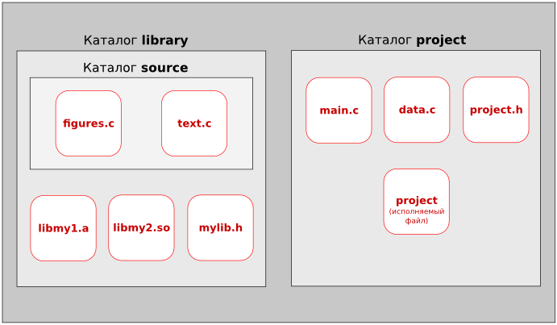

Особенности языка C. Учебное пособие
Пояснительная записка
Учебное пособие "Особенности языка C" представляет собой курс, состоящий из 22 занятий (каждое из которых рассчитано на 2 академических часа) и одной проверочной самостоятельной работы (на выполнение которой может быть отведено от 2 до 4 академических часов).
Курс предполагает, что обучающийся уже знаком с каким-либо иным языком программирования.
В данном учебном пособии рассматриваются отличительные особенности программирования на языке C. Кроме того, уделяется внимание обработке строковых данных, структурам, динамическому типу данных, вводу из файла и выводу в него, передаче аргументов командной строки в программу, препроцессору, многофайловым программам, созданию библиотек. Почти каждый урок содержит задания в форме задач. В конце учебника приведены примеры решения части из них.
Рекомендуется при изучении языка C с помощью этого учебного пособия пользоваться операционной системой на базе ядра Linux.
Материалы, входящие в состав данного курса, распространяются на условии лицензии GNU FDL. Пособие не содержит неизменяемых разделов. Автором является С. Шапошникова (plustilino). Встречающиеся в книге названия могут являться торговыми марками соответствующих владельцев.
Учебное пособие "Особенности языка C" было опубликовано на сайте http://younglinux.info в период с января по апрель 2012 года.
| Прикрепленный файл | Размер |
|---|---|
| Скачать pdf-версию учебного пособия "Особенности языка C" | 902.27 кб |
Урок 0. Приступая к работе
Особенности языка С. Учебное пособие
Предисловие
C — это достаточно "древний" язык программирования, он сформировался в начале 70-х. Не смотря на это обстоятельство, C — живой язык в том смысле, что он активно применяется в настоящее время. Он был придуман, использовался и используется для написания существенных частей программного кода Unix-подобных операционных систем. Также на нем пишут утилиты, компиляторы и реже прикладные программы. Поэтому C называют системным языком программирования.
Его живучесть можно объяснить тем, что принципы работы операционных систем относительно универсальны, они не подвержены тому прогрессу, который можно наблюдать в среде пользовательского ПО и Web-приложений. C не является языком достаточно высокого уровня, он близок к аппаратуре компьютера. В результате программы на C получаются относительно компактными и быстрыми.
C не поддерживает объектно-ориентированного программирования. Поддержка ООП реализована в C++. Хотя последний возник на основе языка C, он не является его "продолжением", а представляет собой отдельный язык, который можно изучать, не зная C. Однако, на мой взгляд, изучение C будет полезно перед знакомством с его "продвинутым младшим братом", т.к. синтаксис языков похож, C не перегружает мозг начинающего программиста сверхвозможностями и приучает к пониманию сути происходящего.
Подходит ли C для первого знакомства с программированием? По моему скромному мнению, нет. Особенно, если первое знакомство происходит в школьном возрасте. Нельзя сказать, что синтаксис C сложнее, чем у Pascal. Но в языке C многое делается с помощью указателей, они играют здесь ключевую роль; а эта тема достаточно сложная для понимания и почти не изучается в школе. C предполагает более глубокое знание основ работы компьютера. Конечно, можно изучать программирование с использованием C и не изучать при этом указатели. Однако получится какое-то урезанное изучение. Получится, что человек будет думать, что знает C, почти ничего о нем не зная. C был придуман серьезными бородатыми людьми для написания серьезной программы — операционной системы UNIX. Он не был придуман для обучения начинающих, которые не всегда могут отличить ветвление от цикла.
Поэтому это пособие посвящается тем, для кого C как минимум второй изучаемый язык программирования, и они как минимум представляют себе, что такое переменная, ветвление, цикл, функция, тип данных, массив. Если вы знакомы только с языком Python, в котором нет массивов, это не страшно. Массивы очень похожи на списки, за одним существенным исключением. В одном python-списке элементы могут быть как одного так и различного типа, а массив всегда содержит элементы одного и того же типа.
С другой стороны курс "читается" для школьников, возможно с ним познакомятся и их учителя, поэтому стиль изложения адаптирован для соответствующей аудитории.
В результате изучения данного курса вы не познакомитесь с реальными примерами практического использования языка C, не научитесь решать сложные логические задачи типа олимпиадных. Вы просто будете знать особенности C. Это не так уж мало. На момент написания этого урока предполагается, что курс будет включать примерно 25 уроков.
Литература
Перед тем как приступить к созданию этого курса мной были прочитаны, пролистаны и просмотрены следующие источники:
- Б. Керниган, Д. Ритчи. Язык программирования C. Второе издание. - М.: "Вильямс", 2008. - 304 с.
- X. Дейтел, П. Дейтел. Как программировать на C.
- Н.А. Калинина, Н.И. Костюкова. Основы программирования на языке C. (intuit.ru/department/pl/c/)
- К.Ю. Поляков. Язык программирования Си. Практический курс. (kpolyakov.narod.ru/school/c.htm)
- Н.Н. Иванов. Программирование в Linux. Самоучитель. - СПб.: БХВ-Петербург, 2007. - 416 с.
- Wikipedia.org
Несколько слов по поводу указанных источников. Более тщательно был изучен первый, остальные достаточно поверхностно. В книге K&R встречается использование конструкций и понятий языка до того, как они будут объяснены. Начиная где-то с главы 3, примеры достаточно сложные и объёмные. Сами авторы в начале издания говорят о том, что они пытаются показать реальные примеры и стиль программирования на C. В данном пособии примеры будут простыми, целью их будет демонстрация понятий компьютерной науки, программирования, языка C, а не реализация логики решения задач, имеющих практическое значение.
Книга Дейтелов включает описание не только языка C, но и C++ (начиная примерно с 15 главы). Данное пособие, на мой взгляд, лучше других подходит для самообразования. Содержит целостные примеры, много заданий, предупреждения о возможных ошибках и советы. Материал расчитан на людей, которые только начинают изучать программирование.
Курс Калининой-Костюковой содержит некоторые "архаизмы" (то, как там объявляются переменные в функциях), когда доходит до сложного, то краткие ясные и подробно разобранные примеры отсутствуют, в одном примере используется оператор new языка C++ и тут же функция malloc() языка C, что странно, учитывая, что new до этого не упоминается. В остальном в курсе достаточно подробно разобраны основы языка С. В следствие чего, читается он легче K&R.
Курс господина Полякова, на наш взгляд, является прежде всего курсом по алгоритмике и решению задач, в нем достаточно подробно разобраны массивы и сортировки. При работе с динамическими структурами используется язык C++. Курс понравился своей ясностью, четкостью и наглядностью. В свете "лицензионного соглашения", приведенного на странице курса Полякова, обещаю проследить, чтобы примеры, а также имена переменных из моего пособия не совпадали с теми, которые используются в его. Однако оттуда была сперта идея использовать в Windows среду программирования Dev-C++, которая является СПО и скачать ее можно с сайта разработчика: bloodshed.net.
Самоучитель Н. Иванова помог понять, как собираются многофайловые программы и используются библиотеки. Википедии использовалась для поиска дополнительной информации.
Какими программами пользоваться в GNU/Linux и Windows
Я предпочитаю GNU/Linux, Vim и GCC. Однако, если вас пугает Vim, то можете использовать любой текстовый редактор с подсветкой синтаксиса (например, KWrite). В таком случае в GNU/Linux у вас должны быть постоянно открытыми два окна: редактор и Консоль (оно же Терминал). В одном вы редактируете исходный код программы, в другом — даете команды. (Это наиболее удобный вариант, особенно при обучении в группе или классе.)

У вас может быть открыто всего одно окно, если вы будете использовать Vim, т.к. он позволяет отдавать команды оболочке Bash из самого редактора. Не рекомендую пользоваться какими либо средами разработки, которые при сохранении файла создают "левые" дополнительные файлы. При обучении все должно быть ясно и просто.
Если вы не знакомы с Vim, но решили его попробовать, то после установки этого редактора, выполните в Bash команду vimtutor. Запустится самоучитель по Vim, у меня в Ubuntu он на русском языке. Данный учебник "проходится" как интересная игра. Конечно не за обещанные 25-30 минут, но за пару часов вы освоитесь в Vim, так что сможете в нем писать программы. В принципе для более-менее комфортной работы вам будет достаточно запомнить следующие команды Vim:
dd – удалить строку и поместить ее в буфер;
yy – скопировать строку в буфер, 2yy – скопировать две строки (число может быть любым);
p — вставить объект из буфера.
C – компилируемый язык программирования. В GNU/Linux для получения исполняемых файлов используется GCC. Об этом инструменте можете прочитать в Википедии или других источниках. Сейчас вам надо запомнить следующее. Чтобы из исходного файла (будем приписывать к названиям таких файлов расширение *.с) получить исполняемый файл, надо выполнить в оболочке Bash команду примерно следующего вида:
gcc -o hello hello.c
, где gcc — команда, запускающая программу, выполняющую компиляцию и иные действия; -o – ключ, сообщающий, что мы вручную указываем имя исполняемого файла; hello – имя исполняемого файла; hello.c – имя файла с исходным кодом.
Вот как примерно работаю в GNU/Linux я при написании маленьких программ на C:
1. Открываю Терминал.
2. С помощью команды cd перехожу в каталог, где собираюсь сохранять файлы.
3. Запускаю Vim, передав в качестве параметра имя файла:
vim hello.c
4. Редактирую файл (i), сохраняю его (Esc->:w).
5. Не выходя из Vim, в командной строке редактора даю команду на компиляцию (обратите внимание на восклицательный знак, он означает, что команда не для Vim, а для Bash):
:!gcc -o hello hello.c
6. Запускаю исполняемый файл (комбинация символов ./ обозначает текущий каталог):
:!./hello
7. Следует заметить, что после проставления двоеточия в командной строке Vim работает прокрутка истории команд, что удобно, если файл часто редактируется и снова компилируется.
Если вы будете работать в обычном текстовом редакторе, то в Терминале не забудьте перейти в каталог, где сохранен файл с исходным кодом.
В Windows можете использовать среду Dev-C++. При сохранении выбирайте тип файла "C source files (*.c)". Компиляция и запуск программы выполняется при нажатии клавиши F9. После исполнения программа сразу закрывается и результат невозможно увидеть. Чтобы этого не происходило прописывают лишние две строки (#include <conio.h>, getch()).
| "Hello World" в GNU/Linux | "Hello World" в Windows |
|---|---|
#include <stdio.h> main () { printf ("Hello World\n"); } |
#include <stdio.h> #include <conio.h> main () { printf ("Hello World\n"); getch(); } |
Разбор "Hello World"
Сразу отметим некоторые особенности языка программирования C.
Можно было бы сказать, что в языке C роль основной ветки программы берет на себя функция main(). Эта функция всегда должна присутствовать в законченной программе на языке C, и исполнение программы начинается именно с нее. Однако объявленные внутри нее переменные не являются глобальными, а их область видимости простирается только на main(). Тем не менее в языке программирования C почти весь программный код заключается в функции, и функция main() является главной и обязательной.
Функция printf() предназначена для вывода данных. Ее назначение аналогично процедуре write() языка Pascal и функции print() в Python. Функция printf() не создает новую строку после своего исполнения. Поэтому для перехода на новую строку используется специальный символ, который обозначается комбинацией \n. Законченные выражения на языке C разделяются точкой с запятой.
В C функции ввода-вывода не являются частью языка. Например, в Python нам ничего не надо дополнительно присоединять к файлу, чтобы пользоваться функциями print() и input(). В C же мы не можем просто вызвать функцию printf(), т.к. в самом C ее просто нет. Эту функцию, а также ряд других, можно подключить с помощью заголовочного файла stdio.h. Именно для этого в начале программы прописана строка #include <stdio.h>. Include с английского переводится как "включить", а stdio есть сокращение от "стандартный ввод-вывод (input-output)".
В заголовочных файлах (они оканчиваются на *.h) обычно содержаться объявления тех или иных функций. Объявление — это просто описание функции: какие параметры она принимает и что возвращает. Сам код функции (определение) находится не в заголовочном файле, а в библиотеках (других файлах), которые могут быть уже скомпилированы и расположены в системных каталогах. Перед компиляцией программы запускается препроцессор языка C. Помимо прочего он включает в начало файла программы содержимое указанных в ней заголовочных файлов.
Задание
Удалите (или закомментируйте1) первую строчку кода, после этого попробуйте скомпилировать программу. Какие сообщения вы получили?
1 // - однострочный комментарий на языке C; /* … */ - "универсальный" комментарий на языке C.
Урок 1. Типы данных и их вывод
Особенности языка С. Учебное пособие
Эта тема не так проста как кажется. Точнее она проста, но достаточно объемна по количеству информации. Лучше в ней разобраться до конца и запомнить некоторые вещи наизусть.
На этом уроке мы познакомимся с особенностями функции printf() и типами данных: целыми и вещественными числами, символами, массивами и строками. Это далеко не все допустимые в C типы. Есть еще указатели, структуры, объединения, перечисления, также в C существует возможность определять собственные типы данных.
Функция printf() и форматированный вывод
Вывод символов на экран, а точнее в стандартный поток вывода, осуществляется в языке C помощью функции printf(). Эта функция выводит на экран строку, переданную первым аргументом, предварительно заменив в ней специальные комбинации символов преобразованными в символы данными, переданными последующими аргументами. Следующие после первой строки данные могут быть строками, символами, целыми или вещественными числами, а также указателями. У каждого типа данных имеется свое обозначение — своя спецификация формата.
На прошлом уроке мы выводили строку "Hello World" вот так:
printf("Hello World\n");
Однако то же самое можно было получить так:
printf("%s\n", "Hello World");
Здесь %s — это спецификация строкового формата, т.е. вместо %s будет подставлены последующие переданные в функцию данные, которые должны быть строкой. Вывод целого числа может выглядеть так:
printf("%d\n", 5);
Вместо числа 5 может стоять переменная целочисленного типа. Функция printf() может принимать произвольное число параметров:
printf("%d %s, %d %s.\n", 3, "dogs", 2, "cats");
При выводе данные подставляются по очередности следования: 3 на место первой спецификации, dogs на место второй и т.д. Т.е. следует строго соблюдать соответствие форматов и последующих данных.
Под выводимые данные можно выделять больше знакомест, чем необходимо. Для этого между знаком % и буквой формата прописывается целое число, обозначающие ширину поля, например так: %10d. По умолчанию выравнивание происходит по правому краю. Для выравнивания по левому краю перед числом ставится знак минус.
Задание
Напишите программу, которая выводила бы на экране данные примерно так, как на картинке. При этом используйте возможность задать ширину поля, а также выравнивание по левому и правому краям.
Целые числа
В языке C существует несколько типов целых чисел. Они различаются между собой объемом памяти, отводимым под переменную, а также возможностью присваивания положительных и отрицательных чисел. От объема памяти, т.е. от количества выделяемых байтов под переменную, зависит, каким может быть максимально возможное число, записанное в данную переменную. Так, если под переменную выделяется 2 байта и ей можно присваивать только положительные числа, то эти числа будут в диапазоне от 0 до 65535. (Если вы не знаете, почему это так, то спросите.)
Чаще всего используется тип int. Вот пример, где происходит объявление и определение (присваивание значений) целочисленных переменных, а также вывод их значений на экран:
#include <stdio.h> main() { int lines, i; int count = 0; lines = 100; i = -1; printf("%5d %5d %5d\n", i, count+10, lines); }
Обратите внимание, что присваивать значение можно при объявлении переменных.
Задание
Обычно под переменную типа int отводится 4 байта. Определите (узнайте, вспомните) максимально и минимально возможные значения для переменных такого типа. Объявите в программе переменную max типа int и присвойте ей значение на единицу больше максимально допустимого. Запрограммируйте вывод значения переменной на экран. Скомпилируйте программу и запустите. Чему равна переменная? Почему?
Что будет, если переменной присвоить значение на единицу меньше минимально допустимого ее типом?
Помимо типа int в языке программирования C существуют другие (модифицированные) целочисленные типы:
short— отводится меньше байтов, чем наint;long— отводится больше байтов, чем наint(не всегда, зависит от системы);unsigned— столько же байт как уint, но без отрицательных чисел; в результате чего знаковый разряд освобождается, и количество положительных значений увеличивается;unsigned shot;unsigned long.
Вот по-моему и все. При выводе длинных чисел следует дополнять спецификацию формата буквой l перед буквой формата. Например:
printf("%ld\n",i); printf("%15ld\n",i);
Символы
Под символьный тип данных отводится 1 байт памяти. Также, как вам должно быть известно, у каждого символа есть соответствующее ему целое число по таблице символов (в данном случае, ASCII).
Тип char языка программирования C включает диапазон чисел от -128 до 127. Значения от 0 до 127 могут быть заданы или выведены на экран в виде соответствующих символов (на самом деле не все). Если значение переменной определяется в виде символа, то символ заключается в одиночные кавычки, например, так: 'w'. Также в языке существует тип unsigned char с диапазоном чисел от 0 до 255.
С другой стороны, если переменная задана как int или short и ей присвоено значение в диапазоне, где оно может быть представлено символом, то значение можно вывести как символ. Соответственно целочисленной переменной можно присвоить символ.
Если в программе вы будете использовать целые числа со значениями до 127 или 255 и хотите сэкономить память, то объявите переменную как char или unsigned char.
Получается, что в программе символы — это числа, а числа — символы. Тогда как указать, что мы хотим видеть на экране: символ или число? Для вывода на экран символов используется спецификация формата вида %c.
Задание
Спишите программу представленную ниже. Выполните ее, объясните результат. Самостоятельно поэкспериментируйте, изменяя значения переменных и их тип.
#include <stdio.h> main() { char ch = 63; unsigned char uch = 'r'; short j = 'b', k = 99; printf("%c == %d\n", ch, ch); printf("%c == %d\n", uch, uch); printf("%c, %c\n", j, k); }
Вещественные числа
В языке C существует три типа чисел с плавающей точкой: float и double (двойной точности) и long double. Также существует три формата вывода вещественных чисел, причем они не связаны с типом, а связаны с удобством представления числа. Вещественные числа могут иметь высокую точность, очень маленькое или очень большое значение. Если выполнить функции printf() с такими параметрами:
double a = 0.0005; printf("%f\n", a); printf("%g\n", 0.0005); printf("%g\n", 0.00005); printf("%e\n", 0.0005);
, то на экране мы увидим следующее:
0.000500 0.0005 5e-05 5.000000e-04
В первом случае (%f) выводится число в обычном виде. По умолчанию точность представления числа равна шести знакам после точки.
Во втором случае (%g) число выводится как обычно, если количество значащих нулей не больше четырех. Если количество значащих нулей четыре и больше, то число выводится в нормализованном виде (третий случай). Запись 5e-5 означает 5 * 10-5, что равно 0.00005. А, например, запись 4.325e+3 является экспоненциальной записью 4.325 * 103, что равно 4325. Если с такой формой представления чисел вы сталкиваетесь первый раз, то почитайте дополнительные источники, например, статью в Википедии "Экспоненциальная запись".
Четвертый формат (%e) выведет число исключительно в нормализованном виде, каким бы это вещественное число ни было.
Если при выводе требуется округлить число до определенной точности, то перед буквой-форматом ставят точку и число-указатель точности. Например, printf("%.2f", 0.23) выведет на экран 0.23, а не 0.230000. Когда требуется указать еще и поле, то его ширину прописывают перед точкой, например, %10.3f.
Задание
Напишите программу, в которой должны быть две переменные любых вещественных типов. Одной переменной присвойте достаточно маленькое, а другой — большое значение. Выведите на экран значения этих переменных с использованием различных форматов. При использовании форматов %f и %e округлите числа до трех знаков после точки.
Массивы
Переменные, содержащие массивы, в языке программирования C объявляются, например, так:
int arr[5], nums[N]; float f_arr[100]; char str[80];
При этом если используется константа, то она должна быть определена до своего использования следующим образом (чаще константы определяют вне функций):
#define N 100
На самом деле #define является командой препроцессора, используемой не только для определения констант. Когда препроцессор обрабатывает исходный файл программы, он подставляет во все места, где была упомянута константа ее значение.
Запомните, индексация массивов в языке программирования C начинается с нуля.
Присваивание значений элементам массивов можно произвести сразу или в процессе выполнения программы. Например:
char vowels[] = {'a', 'e', 'i', 'o', 'u', 'y'}; float f_arr[6]; f_arr[0] = 25.3; f_arr[4] = 34.2; printf("%c, %.2f\n", vowels[4], f_arr[0]);
Когда переменная-массив объявляется и сразу определяется (как в случае vowels), то размер массива можно не указывать, т.к. он вычисляется по количеству элементов, переданных в фигурных скобках.
Строки
В языке программирования С нет такого типа данных как строки, хотя формат вывода строки есть (%s). Под словами "нет такого типа данных" я подразумеваю отсутствие специального ключевого слова, которое бы определяло переменную строкового типа (по аналогии с переменными типа int или float). Строки в языке программирования C интерпретируются как массивы символов, последний элемент которых является самым первым (с номером 0) символом в таблице ASCII. В этом месте в таблице стоит "ничто", имеющее символьное обозначение '\0'.
С другой стороны, строки — это необычные массивы в том смысле, что работа с ними в языке программирования C несколько отличается от работы с числовыми массивами. В этом мы убедимся позже.
Выше мы объявили и определили массив vowels. Если бы мы его определили вот так:
char vowels[] = {'a', 'e', 'i', 'o', 'u', 'y', '\0'};
или так:
char vowels1[] = "aeiouy";
то он бы был строкой. Во втором случае сами двойные кавычки "говорят" что это строка, и символ окончания строки '\0' записывается в память.
Массивы символов можно выводить на экран просто указав имя переменной, а вот с массивами чисел такой номер не пройдет:
printf("%s\n", vowels); printf("%f\n", f_arr); // ошибка
Функция sizeof()
Функция sizeof() языка C принимает в качестве аргумента константу, тип данных или переменную и возвращает количество байт, которые отведено под этот объект в памяти ЭВМ.
При выводе на экран значения, возвращаемого sizeof() используется формат %lu (длинное целое без знака). Примеры:
int a = 10; int b[100]; printf("Integer: %lu \n", sizeof(a)); printf("Float: %lu \n", sizeof(float)); printf("Array of 100 integers: %lu \n", sizeof(b));
Задание
Напишите программу, выводящую информацию о количестве байтов, отводимых в памяти под типы данных, которые были изучены на данном уроке. При работе с массивами символов, определенными строковыми константами (в двойных кавычках), обратите внимание, что размер массива больше на единицу, чем количество видимых символов. Вспомните, почему?
Если у вас на компьютере есть вторая операционная система, то скомпилируйте программу и там; сравните полученные результаты. Вот что получилось у меня в результате компиляции с помощью GCC в Xubuntu и Fedora:
Урок 2. Символьный тип данных. Специальные символы
Особенности языка С. Учебное пособие
Этот урок будет совсем небольшим по количеству теории. Здесь мы более подробно рассмотрим символьный тип данных.
По таблице ASCII символы с номерами (кодами) от 0 до 127 жестко определены. В этом диапазоне номера присвоены символам цифр, латинским (английским) маленьким и большим буквам, а также используемым в языке иным символам ('!', '%', '~' и т.п.). Здесь же заданы коды для различных управляющих символов, которые никак не экране не отображаются, а что-то делают (например, создают новою строку или отступ, подают звуковой сигнал и др.). Расширенная таблица ASCII кодирует символы национальных алфавитов (например, русского языка) числами лежащими в диапазоне от 128 до 255.
Символы цифр от '0' до '9' имеют последовательные коды от 48 до 57. Этот факт обычно используют, при "переводе" символов цифр в числа. Если мы знаем, что у '0' код 48, а был задан символ '5', имеющий код 53, то если вычесть из 53 число 48, получим число 5. Знание кодов символов цифр позволяет программировать извлечение чисел из текста.
Английские большие буквы (прописные) имеют последовательные коды от 65 (A) до 90 (Z), маленькие (строчные) — от 97 до 122.
Задания
- Напишите программу, в которой объявлены только две переменные символьного типа. Одной переменной присвоен, например, символ '4', а второй — '7'. Функция
printf()должна выводить на экран разность и сумму чисел, которые были представлены символами и присвоены переменным. (Подсказка: все вычисления для получения результата следует выполнять непосредственно в выражении, которое будет являться одним из параметром функцииprintf().) - Переменная not_num содержит строку из трех символов-цифр, например "528". Необходимо получить из этой строки соответствующее ему число и присвоить его переменной num. Вывести на экран результат выражения
num – 10. (Подсказка: строка — это массив символов, следовательно, вы можете извлекать символы цифр по их индексам; при вычислении числа первый символ массива, преобразованный в число, будет означать количество сотен, второй — десятков, а третий — единиц.) - Известно, что символ A английского алфавита имеет код 65. Напишите программу, определяющую какие символы в этом алфавите стоят на 5, 12 и 19 местах.
Специальные символы
Специальные символы в программном коде обозначаются двумя символами, т.к. одним их обычно обозначить невозможно. Но по сути представляют собой один символ. Например, букву 'a' можно обозначить одним символом, а как обозначить символ создания новой строки, если ему не соответствует ни один знак? Приходится выкручиваться и представлять такой неординарный символ комбинацией пары других символов: '\n'. Помните при этом, что на самом деле это всего лишь один символ.
Ниже перечислен ряд управляющих символов (не все) и то, что они делают:
'\n'— создание новой строки и переход на нее;'\t'— табуляция (отступ в несколько пробелов);'\r'— возврат каретки (перевод курсора в первую позицию текущей строки);'\b'— возврат курсора на один символ назад с удалением этого символа.
В программном коде, помимо управляющих, специальными символами могут записываться некоторые вполне обычные символы, такие как кавычки, одиночные кавычки, обратная косая черта и др. Некоторые из этих символов можно задать одним символом в одиночных кавычках. Но многие из них невозможно вставить просто так внутрь строки, т.к. они что-то значат с точки зрения синтаксиса языка. Например, обратная косая черта в строке сообщает, что начинается обозначение специального символа, двойная кавычка обозначает начало или конец строки. Поэтому такие символы также обозначаются парной комбинацией других символов:
'\\'— обратный косая черта;'\''— одиночная кавычка;'\"'— двойная кавычка (не в строке можно просто'"');'\0'— пустота, символ с кодом 0 по таблице ASCII.
Задания
- Напишите программу, в которой бы использовалась табуляция, вывод на экран строки в двойных кавычках, в одиночных кавычках (апострофах), затирание предыдущего символа и возврат каретки (для последних двух случаев, чтобы увидеть результат, управляющие символы надо вставить внутрь строки). Проверьте, как выводится на экран строка, если в ее середине стоит нулевой символ.
- Выведите на экран символьное обозначение управляющих символов и их номера по таблице ASCII. Пример вывода:
\n - 10 \t - 9 \b - 8 \r - 13
- Выясните экспериментальным путем, как вывести на экран символ %. (Существует два способа.)
Урок 3. Операторы ветвления
Особенности языка С. Учебное пособие
if-else
В языке программирования C синтаксис оператора ветвления if-else выглядит так:
if (логич_выражение) выражение1; else выражение2;
Как и в других языках ветка else не является обязательной.
В языке С в простых логических выражениях используются следующие знаки операторов: >, <, >=, <=, ==, !=.
В случае если тело той или иной ветки состоит из нескольких законченных выражений, разделяемых точкой с запятой, то тело заключается в фигурные скобки:
if (логич_выражение) { выражение1; выражение2; … } else { выражениеN; … }
Задание
Напишите любую программу на языке C, в которой бы использовалась конструкция if-else.
В C можно использовать вложенные конструкции if-else. При этом рекомендуют вкладывать во внешнюю ветку else, а не if, т.к. это позволяет избегать неоднозначности толкования инструкции. Посмотрите на такую конструкцию:
if (…) if (…) …; else …; else if (…) …; else …;
Для более легкого восприятия человеком отступами подчеркнуто, что куда вложено. Однако для компилятора с языка C отступы никакой роли не играют, и принадлежность первой ветки else не очевидна. Ее можно было бы ошибочно отнести к первому if, в результате чего второе else было бы вообще неуместным, т.к. не относилось бы ни к какому if. В данном случае такой ошибки не будет, т.к. компилятор руководствуется правилом: ветка else относится к ближайшему к ней сверху if, у которого еще нет ветки else. Именно поэтому здесь первое else относится ко второму if (т.к. оно к нему ближе), а второе else к первому if, т.к. второе if уже "покрыто" предыдущим else. Теперь посмотрите вот на такую конструкцию:
if (…) if (…) ….; else if (…) ….; else ….; <c> Программист отступами показал, что он хочет, чтобы первое <c>else
if. Однако компилятор, руководствуясь правилом отнесения веток else, расценит программу вот так (если перевести на удобство чтения ее программистом):if (…) if (…) ….; else if (…) ….; else ….;
При этом программа будет делать не то, что хотел программист: если в выражении при первом if будет возвращаться ложь, то ни один else просто не сработает. Однако в таких сложных случаях есть выход — это использование фигурных скобок, даже если тело условной инструкции состоит всего из одного законченного выражения:
if (…) { if (…) ….; } else if (…) ….; else ….;
В таком случае программа будет восприниматься компилятором именно так, как задумал программист.
Задание
Придумайте и напишите программу, в которой бы использовалась вложенная конструкция if-else.
Условное выражение
В языке программирования C существует сокращенная запись инструкции if-else в виде условного выражения, результат которого может быть присвоен переменной:
(логич_выражение) ? выражение1 : выражение2
Переводится это так. Если логич_выражение вернуло истину, то все выражение возвращает выражение1; если логич_выражение вернуло ложь, то все выражение возвращает выражение2. Например:
x = 12; y = 16; z = (x > y) ? x - 1 : y - 1;
Здесь z получит значение 15. Такое условное выражение бывает очень удобно, однако область его применения ограничена простейшими случаями ветвления, т.к. невозможно создавать сложные "тела" в такой конструкции.
Задание
Напишите программу, в которой бы использовалось условное выражение.
Операторы И (&&) и ИЛИ (||)
Как известно логическое выражение может быть сложным. Логические операторы И и ИЛИ в языке программирования C обозначаются соответственно парными знаками амперсанда (&&) и вертикальной черты (||). Их приоритет меньше, чем у простых логических операторов, поэтому простые логические операции при их объединении в сложные логические выражения можно не заключать в скобки. Пример сложного логического выражения на языке C:
a > 100 && b != 0
Задания
- Напишите программу, в которой при
ifиспользовалось бы сложное логическое выражение. - Проверьте и объясните, что выводит функция
printf(), если ей передать простые или сложные логические выражения. Например:
printf("%d\n", a == b && c < d); printf("%d\n", c < d);
Оператор switch
При организации множественного выбора бывает удобно использовать не вложенные if-else, а оператор switch. Его синтаксис можно описать так:
switch (целая_переменная) { case константа1: операции; case константа2: операции; …. default: опрации; }
Это приблизительное, а не точное описание. В скобках после слова
switch может стоять не только переменная, но и выражение, результат выполнения которого возвращает целое значение (может быть символ). Константы при case также могут быть результатом выполнения выражений. Константы можно группировать в одном case (например, case 12, 13, 18). Ветка default не обязательна.
При выполнении оператора switch, заданное значение в круглых скобках сравнивается с константами. Как только совпадение будет найдено, все последующие вложенные во все case операции начинают выполняться. Т.е. происходит нечто странное: выполняются операции веток case (и default тоже), константы которых не совпадают со значением при switch. Например, в результате выполнения вот такой программы:
int a=1; switch (a) { case 0: printf("%d ", 0); case 1: printf("%d ", 1); case 2: printf("%d ", 2); default: printf("%d ", -1); } printf("\n");
на экране будет выведено:
1 2 -1
, т.к. как только совпадение было обнаружено, все нижеследующие инструкции были выполнены.
Чтобы этого не происходило, в конце операций, принадлежащих определенному case, дописывают оператор break, который осуществляет принудительный выход из всей конструкции (в данном случае switch). Например:
int a=1; switch (a) { case 0: printf("%d\n", 0); break; case 1: printf("%d\n", 1); break; case 2: printf("%d\n", 2); break; default: printf("%d\n", -1); }
выведет только единицу, т.к. выполнение всей инструкции
switch прервется после выполнения инструкции break при case 1.
Задание
Придумайте свою программу с использованием оператора switch.
Урок 4. Циклы в языке C
Особенности языка С. Учебное пособие
Инкремент и декремент
Прежде, чем изучать циклы, следует познакомиться с часто используемым в языке C способом увеличения/уменьшения значений переменных на единицу. Конечно, в C работают такие формы изменения значений как, например, a += 1 или a -= 1. Однако чаще используют операции инкрементирования (оператор инкремента "++") и декрементирования (оператор декремента "--"): i++ или ++i, i-- или --i. В результате этих операций переменные увеличиваются или уменьшаются на единицу.
Запомните, когда вы видите выражения типа ++i или i++, то в результате их выполнения значение i меняется. Не надо делать вот так: i = ++i. Это совершенно лишнее.
Когда знак инкремента или декремента стоит перед переменной, то перед нами префиксная форма операции (++i, --i), а когда после переменной, то постфиксная форма (i++, i--). Когда эти выражения не участвуют в построении более сложных выражений, то между префиксной и постфиксной формами никакой разницы нет: что i++, что ++i — без разницы, в результате мы получим значение i на единицу больше. Но когда эти выражения участвуют в построении более сложных, то разница между префиксной и постфиксной формами появляется и заключается в следующем: переменная над которой производится операция инкрементирования или декрементирования в постфиксной форме сначала используется в сложном выражении как есть, и только потом увеличивается на единицу; если мы имеем дело с префиксной формой, то переменная сначала изменяется, а затем используется. Например, код:
int a, b, c, d; a=b=c=d=0; // выражение означает, что всем переменным присваивается 0 printf("a=%d, b=%d, c=%d, d=%d\n", a, b, c, d); c = ++a; d = b++; printf("a=%d, b=%d, c=%d, d=%d\n", a, b, c, d);
, выведет на экране:
a=0, b=0, c=0, d=0 a=1, b=1, c=1, d=0
Объясняется такой результат так:
- значение переменной a было увеличено на единицу, после чего это значение было присвоено переменной c;
- значение переменной b было сначала присвоено переменной d и только потом увеличено на единицу.
Еще один пример:
int x, y; x = y = 0; printf("%d\n", x++ > 0); printf("%d\n", ++y > 0);
На экране будет выведено:
0 1
Это результат логических выражений, где 0 означает ложь, а 1 — истину. В данном случае, когда x сравнивается с нулем, то его значение еще не увеличено, а когда сравнивается у, то его значение уже больше нуля.
Применять операторы инкремента и декремента можно также к переменным вещественного типа.
Задание
Придумайте более сложные, чем представленные выше, выражения с использованием операторов инкремента и декремента. Проверьте и объясните результат их выполнения.
while
Цикл while в языке программирования C работает также как и в других языках программирования. По аналогии с условным выражением в инструкции if, условное выражение при while заключается в круглые скобки. Если тело цикла включает несколько выражений разделяемых точкой с запятой, то все тело заключается в фигурные скобки.
Задание
- Присвойте переменной star значение 0. Пока значение star не достигнет 55 выводите на экран в строку по одной звездочке (*).
- С помощью цикла
whileзапрограммируйте вывод на экран цифровых кодов и значений таблицы символов ASCII от 31 до 127 включительно. При этом после каждого десятого символа осуществляйте переход на новую строку. (Подсказка: чтобы переходить на новую строку, в циклеwhileнадо использовать инструкциюif, в условии которой остаток1 от деления на 10 сравнивается с нулем.)

- Используя внешний и вложенный циклы
whileорганизуйте вывод таблицы умножения на экран.

1 Операция нахождения остатка от деления в языке C обозначается знаком процента (%).
do-while
Цикл do-while отличается от while лишь тем, что его тело будет выполнено хотя бы один раз независимо от условия выполнения цикла. Синтаксис цикла do-while можно описать так (фигурные скобки можно опустить, если законченное выражение только одно):
do { выражение1; …; } while (логич_выражение);
Этот цикл называют циклом с постусловием. Его используют намного реже обычного while. В принципе почти всегда можно обойтись без него, но в определенных ситуациях его использование упрощает код. Допустим требуется вывести на экран отдельные цифры числа. Любое число состоит хотя бы из одной цифры, даже число 0. Можно решить эту задачу с использованием цикла while:
while (a > 0) { printf("%d\n", a % 10); a = a / 10; }
Но в этом случае, если a равно 0, то цикл не выполнится ни разу. Пришлось бы перед циклом использовать инструкцию if, в которой сравнивать переменную с 0. Использование же цикла do-while решает эту проблему, т.к. его тело один раз выполнится даже при нулевом значении переменной:
do { printf("%d\n", a % 10); a = a / 10; } while (a > 0);
Задание
Придумайте и напишите любую программу, в которой бы использовался цикл do-while.
for
Представим синтаксис заголовка цикла for языка программирования C так:
for (часть1; часть2; часть3)
Заголовок цикла for включает три части, разделенных точкой с запятой; причем каждая часть может быть сложной, т.е. состоять из нескольких выражений, разделенных простой запятой. В первой части обычно указываются переменные и часто их начальные значения; во второй - с помощью логического(их) выражения(й) задаются условия, при которых выполняется тело цикла; в третью часть помещаются выражения, которые выполняются в конце каждой итерации цикла (чаще всего здесь изменяется значение переменной, заданной в первой части заголовка).
Вот так будет выглядеть программный код, выводящий таблицу символов на экран, в котором используется цикл for:
unsigned char a; for (a = 31; a < 128; a++) { if (a % 10 == 0) printf("\n"); printf("%4d-%c", a, a); } printf("\n");
Задание
Напишите программу с использованием цикла for, выводящую на экран таблицу умножения (Подсказка: как и в случае с while следует использовать два цикла — внешний и вложенный.)
break и continue
Оператор break позволяет прервать выполнение цикла, а continue — прервать текущую итерацию (проход) цикла. Почти всегда можно обойтись без этих операторов, но иногда их использование позволяет упростить программный код и сделать его более понятным.
Рассмотрим пару примеров. Допустим, требуется проверить массив на наличие в нем хотя бы одного элемента со значением 0. Как только ноль будет обнаружен проверять оставшуюся часть массива уже нет смысла. Поэтому, чтобы не выполнять лишних итераций, используется оператор break.
Второй пример. Требуется из одного массива скопировать в другой только числа, которые больше 0. Можно с помощью continue прерывать итерацию цикла, если очередной элемент меньше либо равен нулю.
#define N 10 int arr[N] = {6, 5, -4, 3, -7, 2, 7, 0, 3, 9}; int new_arr[N], i, j; for (i=0; i<N; i++) { printf("%d ", i); // просто проверка if (arr[i] == 0) { printf("Stop. Array contains zero\n"); break; } } printf("\n"); for(i=0, j=0; i<N; i++) { if (arr[i] <= 0) continue; new_arr[j] = arr[i]; printf("%d ", new_arr[j]); // проверка j++; } printf("\n");
В данном случае использование
continue совсем не очевидно с точки зрения надобности, т.к. легко можно обойтись без него, если изменить условие при if на противоположное, удалить continue, а оставшийся код поместить в тело оператора if.
Задание
Придумайте пример, в котором уместно было бы использовать оператор break или continue.
Урок 5. Битовые операции
Особенности языка С. Учебное пособие
Для освоения темы этого урока вам потребуются знания о системах счисления (двоичной, восьмеричной и др.), навыки перевода чисел из одной системы счисления в другую, а также вы должны иметь представление о том, что такое битовые (они же поразрядные) операции. С последним можно познакомиться по вот этой лекции.
В языке программирования C существуют следующие поразрядные операции: & (И), | (ИЛИ), ^ (исключающее ИЛИ), << (сдвиг влево), >> (сдвиг вправо), ~ (поразрядное дополнение до единицы). Рассмотрим на примерах, как они работают, но перед этим уделим внимание выводу в языке C чисел в отличных от десятичной системах счисления.
В С можно присваивать целочисленные значения в десятичной, восьмеричной и шестнадцатеричной системах счисления. Для того, чтобы присвоить переменной число в восьмеричной системе счисления, перед ним надо написать 0 (ноль), в шестнадцатеричной — 0x (ноль и икс), например:
int a, b; a = 077; // записано восьмеричное число b = 0x1F; // присвоено шестнадцатеричное число
Любые целые числа можно выводить на экран в десятичном, восьмеричном и шестнадцатеричном представлении. Пример кода для вывода определенных ранее двух переменных в различных системаъ счисления:
printf("%d %o %x %X\n", a,a,a,a); printf("%d %o %x %X\n", b,b,b,b);
В результате на экране вы увидите:
63 77 3f 3F 31 37 1f 1F
Восьмеричные и шестнадцатеричные числа используются из-за удобства при работе с двоичной системой счисления. Каждая цифра восьмеричного числа может быть заменена тремя цифрами двоичного. И каждая цифра шестнадцатеричного числа легко заменяет четыре разряда двоичного числа. Вот таблица соответствия цифр восьмеричной системы счисления числам двоичной системы:
| 0 | 000 |
| 1 | 001 |
| 2 | 010 |
| 3 | 011 |
| 4 | 100 |
| 5 | 101 |
| 6 | 110 |
| 7 | 111 |
Теперь допустим, что у нас есть восьмеричное число 037. По таблице легко понять, что в двоичном выражении оно будет выглядеть как 011 111.
Задание
- Как будут выглядеть восьмеричные числа 04271 и 03566 в двоичном представлении.
- Составьте на бумаге таблицу соответствия шестнадцатеричный цифр двоичным числам. Переведите числа 7D, FFFF, 2C9 в двоичную систему счисления.
Итак, если бы мы при работе с поразрядными операциями использовали десятичные числа, то чтобы оценить результат нам бы каждый раз приходилось переводить десятичное число в двоичную систему счисления, что относительно трудоемко. Если же человек видит, например, восьмеричное число, то он может представить как оно выглядит в двоичном представлении, помня или держа перед глазами таблицу соответствия чисел. Например, как только мы видим 017, то можем представить в уме, как последние четыре бита ячейки памяти забиты единицами.
Теперь вернемся к поразрядным операциям и протестируем каждую из них. Для этого напишем небольшую программу:
int a, b; a = 017; b = 036; printf("0%o & 0%o = 0%o\n", a, b, a & b); printf("0%o | 0%o = 0%o\n", a, b, a | b); printf("0%o ^ 0%o = 0%o\n", a, b, a ^ b); printf("0%o << 2 = 0%o\n", a, a << 2); printf("0%o >> 2 = 0%o\n", a, a >> 2); printf("~0%o = 0%o\n", a, ~a);
Результат ее работы будет выглядеть так:
017 & 036 = 016 017 | 036 = 037 017 ^ 036 = 021 017 << 2 = 074 017 >> 2 = 03 ~017 = 037777777760
Этот результат будет проще понять с помощью рисунка:
В последнем случае получилось такое большое число потому, что под форматы вывода целых чисел (%d, %o, %X) выделяется по 4 байта.
Задание
- Используя шестнадцатеричные числа, напишите аналогичную приведенной выше программу. Объясните результат.
- Попробуйте составлять сложные битовые операции (в несколько действий) и оценивать их результат.
Теперь рассмотрим пример использования битовых операций. Допустим, у нас есть массив, требуется снять с него "маску", которая бы отражала, в какой позиции стоят отрицательные, а в какой положительные элементы. Пусть единица в бите обозначает соответствующий ей положительный элемент массива, а ноль — отрицательный. Другими словами, если у нас есть массив {4, -3, 2, 2, 8, -1}, то его "битовая маска" будет выглядеть как 101110, или в восьмеричном представлении как 056. Составим алгоритм решения этой задачи:
- Будем считать, что массив состоит не более чем из 32 элементов. Поэтому для хранения его "маски" достаточно переменной типа
int. Назовем ее mask и присвоим значение 0. - Перебрать элементы массива в цикле
for. Если встречается положительный элемент, то установить соответствующий ему бит значения mask в 1. - Вывести значение переменной mask на экран в виде восьмеричного числа.
Вроде бы все просто, но как установить в единицу определенный бит числа? Существует закономерность соответствия степеней двойки и двоичного представления числа:
20 = 0000 0001
21 = 0000 0010
22 = 0000 0100
23 = 0000 1000
24 = 0001 0000
и т.д. Если для вас эта последовательность не очевидна, то пересчитайте. Теперь если применить к mask побитовую операцию | (ИЛИ), а в качестве второго операнда использовать определенную степень двойки, то один бит будет установлен в 1. Например:
(0) 0000 0000 | (25) 0010 0000 = 0010 0000
(32) 0010 0000 | (27) 1000 0000 = 1010 0000
При переборе первый элемент массива имеет индекс 0, но соответствующий ему бит в mask должен стоять впереди остальных. Если известно общее количество элементов массива (N), то можно определить степень двойки по формуле N - i - 1. Действительно, имея третий положительный элемент массива из 10 элементов, следует установить в единицу восьмой с конца бит, а это значит надо использовать вторым операндом битового ИЛИ 27, а 7 как раз будет 10(N) - 2(i) - 1.
Другая проблема — как в языке C возвести число в степень. Понятно, что можно написать свой код, но скорее всего в стандартной библиотеке уже есть подобная функция. С помощью заголовочного файла math.h можно подключить библиотеку с математическими функциями. Среди них есть функция pow(), которая принимает два числа и возвращает результат возведения первого числа в степень, выраженную вторым числом. Однако результат возвращается в виде вещественного числа, а нам требуется целое. Как быть? В языке программирования С есть операции приведения типов, которые меняют тип значения с одного на другой. Например, чтобы преобразовать значение вещественной переменной a в целое, следует написать (int) a.
Вот как может выглядеть вышеописанная программа:
#include <stdio.h> #include <math.h> #define N 12 main () { int nums[N] = {7, 3, 9, -5, -3, 2, 1, 0, 16, -4, 2, 0}; int mask = 0, i; for (i=0; i < N; i++) if (nums[i] >= 0) mask = mask | (int)pow(2,N-i-1); printf("%o\n", mask); }
Задание
Напишите предыдущую программу. Оцените как она работает1. Подумайте над тем, как вывести на экран двоичное представление восьмеричного числа. Попробуйте реализовать это.
1 Если у вас не получается скомпилировать программу, добавьте в конце вызова gcc опцию -lm (например, gcc -o bits bits.c -lm).
Урок 6. Посимвольный ввод и вывод. Понятие буфера
Особенности языка С. Учебное пособие
putchar() и getchar()
В заголовочном файле stdio.h содержится объявление не только функции printf(), но и многих других, связанных с вводом-выводом. Среди них есть функции, которые обрабатывают по одному символу за вызов — putchar() и getchar().
Функция putchar() обычно принимает в качестве аргумента символ, либо символьную переменную и в результате своей работы выводит соответствующий символ на экран. Однако этой функции можно передать любое целое число, но, понятное дело, символа на экране вы можете не получить, если числу не соответствует ни один символ по таблице ASCII. Например:
char ch = 'c'; putchar('a'); putchar(98); putchar('\n'); putchar(ch);
Результат:
ab c
Функции putchar() и printf() в определенном смысле взаимозаменяемы, т.к., используя ту или другую, можно получить один и тот же результат. Хотя программный код будет выглядеть по-разному:
char str[] = "Hello"; int i; printf("%s\n", str); // первое Hello for (i = 0; str[i] != '\0'; i++) // второе Hello putchar(str[i]); printf("\n");
В результате выполнения этого кода на экране будут напечатаны два слова "Hello", разделенные переходом на новую строку. С putchar() это выглядит несколько сложнее. Как мы знаем, любая строка оканчивается нулевым по таблице ASCII символом, в данном случае этот символ служит сигналом для прекращения вывода на экран. Но если бы понадобилось вывести на экран строку, разделяя ее символы каким-нибудь другим символом (например, тире), то и в случае с printf() было бы не так все просто:
char str[] = "Hello"; int i; for (i = 0; str[i] != '\0'; i++) printf("%c-",str[i]); printf("%c%c %c",'\b', '\0', '\n'); for (i = 0; str[i] != '\0'; i++) { putchar(str[i]); putchar('-'); } printf("%c%c %c",'\b', '\0', '\n');
Результат:
H-e-l-l-o H-e-l-l-o
Поэтому выбор в пользу той или иной функции зависит от ситуации и ваших предпочтений.
В отличие от функции putchar() функция getchar() не имеет параметром. Когда getchar() выполняется, она считывает их потока ввода один символ и возвращает его в программу. Полученный таким образом символ может быть присвоен переменной, участвовать в выражениях или выводиться на экран с помощью функций вывода.
int a; a = getchar(); printf("%c ", a); putchar(a); putchar('\n');
Если при выполнении этого кода ввести символ, то после нажатия Enter вы увидите два таких же символа на экране:
u u u
Первый — результат выполнения функции printf(), второй — putchar(). Если вы перед нажатием Enter введете несколько символов, то прочитан будет только первый, остальные будут проигнорированы. Посмотрите вот на этот код:
char a, b, c; a = getchar(); putchar(a); b = getchar(); putchar(b); c = getchar(); putchar(c); printf("\n");
Как вы думает, как он будет выполняться? По идее после ввода символа, он должен сразу отображаться на экране функцией putchar() и запрашиваться следующий символ, потому что далее идет снова вызов getchar(). Если вы как корректный пользователь программы сначала введете первый символ и нажмете Enter, то символ отобразиться на экране. Потом вы введете второй символ и после Enter он тоже отобразиться. И тут программа завершится, не дав ввести вам третий символ.
Задание
Удостоверьтесь в этом сами.
Прежде чем попытаться найти объяснение, изобразим "некорректного пользователя" и перед первым нажатием Enter введем несколько символов (больше двух). После Enter вы увидите три первых символа введенной вами строки, и программа завершиться. Хотя куда логичней было бы ожидать, что будет прочитан только первый символ, потом выведен на экран и потом запрошен следующий символ.
Задание
Проверьте это.
Такое странное на первый взгляд поведение программы связано не с языком C, а с особенностью работы операционных систем, в которых реализован буферизованный ввод-вывод. При операциях ввода-вывода выделяется область временной памяти (буфер), куда и помещаются поступающие символы. Как только поступает специальный сигнал (например, переход на новую строку при нажатии Enter), данные из буфера передаются по месту своего назначения (на экран, в переменную и др.).
Теперь, зная это, давайте посмотрим, что происходило в нашей программе, и сначала разберем второй случай с "некорректным пользователем", т.к. для понимания этот случай проще. Когда пользователь ввел первый символ, он попал в переменную a, далее сработала функция putchar(a) и символ попал в буфер. Т.к. Enter'а не было, то содержимое буфера на экране не было отображено. Пользователь ввел второй символ, переменная b получила свое значение, а putchar(b) отправила это значение в буфер. Аналогично с третьим символом. Как только пользователь нажал Enter, содержимое буфера было выведено на экран. Но символы, которые были выведены на экран, были выведены не программой, а операционной системой. Программа же выводила символы еще до того, как мы нажали Enter.
Почему же в первом случае при выполнении программы мы смогли ввести и увидеть на экране только два символа? Когда был введен первый символ, то он был присвоен переменной a и далее выведен в буфер. Затем был нажат Enter. Это сигнал для выброса данных их буфера, но это еще и символ перехода на новую строку. Этот символ '\n', наверное, и был благополучно записан в переменную b. Тогда в буфере должен оказаться переход на новую строку, после этого введенный символ (уже помещенный в переменную c). После нажатия Enter мы должны были бы увидеть переход на новую строку от символа '\n' и букву. Однако печатается только буква. Почему?
Во многих учебниках по языку C приводится пример считывания символов, вводимых пользователем, и их вывод на экран:
int a; a = getchar(); while (a != '\n') { putchar(a); a = getchar(); } putchar('\n');
В переменной a всегда хранится последний введенный символ, но перед тем как присвоить a новое значение с помощью функции
putchar() старое значение сбрасывается в буфер. Как только поступает символ новой строки, работа программы прекращается, а также, поскольку была нажата клавиша Enter, происходит вывод содержимого буфер на экран. Если в условии цикла while будет не символ '\n', а какой-нибудь другой, то программа будет продолжать обрабатывать символы, даже после нажатия Enter. В результате чего мы можем вводить и выводить множество строк текста.
Задание
Напишите программу посимвольного ввода-вывода, используя в качестве признака окончания ввода любой символ, кроме '\n'. Протестируйте ее.
При совместном использовании функций putchar() и getchar() обычно пользуются более коротким способом записи. Например:
while ((a = getchar()) != '~') putchar(a);
Задание
- Объясните, почему сокращенный вариант записи посимвольного ввода-вывода работает правильно. Для этого опишите последовательность операций в условии цикла
while. - Перепишите вашу программу на более короткий вариант.
EOF
Как быть, если требуется "прочитать" с клавиатуры или файла неизвестный текст, в котором может быть абсолютно любой символ? Как сообщить программе, что ввод окончен, и при этом не использовать ни один из возможных символов?
В операционных системах и языках программирования вводят специальное значение, которое служит признаком окончания потока ввода или признаком конца файла. Называется это значение EOF (end of file), а его конкретное значение может быть разным, но чаще всего это число -1. EOF представляет собой константу, в программном коде обычно используется именно имя (идентификатор) константы, а не число -1. EOF определена в файле stdio.h.
В операционных системах GNU/Linux можно передать функции getchar() значение EOF, если нажать комбинацию клавиш Ctrl + D, в Windows – Ctrl + Z.
Задание
Исправьте вашу программу таким образом, чтобы считывание потока символов прерывалось признаком EOF.
Решение задач
Не смотря на свою кажущуюся примитивность, функции getchar() и putchar() часто используются, т.к. посимвольный анализ данных при вводе-выводе не такая уж редкая задача. Используя только функцию getchar(), можно получить массив символов (строку) и при этом отсеять ненужные символы. Вот пример помещения в строку только цифр из потока ввода, в котором может быть набран абсолютно любой символ:
#include <stdio.h> #define N 100 main () { char ch; char nums[N]; int i; i = 0; while ((ch = getchar()) != EOF && i < N-1) if (ch >= 48 && ch <= 57) { nums[i] = ch; i++; } nums[i] = '\0'; printf("%s\n", nums); }
Здесь ввод символов может прекратиться не только при поступлении значения EOF, но и в случае, если массив заполнен (
i < N-1). В цикле while проверяется условие, что числовой код очередного символа принадлежит диапазону [48, 57]. Именно в этом диапазоне кодируются цифры (0-9). Если поступивший символ является символом-цифрой, то он помещается в массив по индексу i, далее i увеличивается на 1, указывая на следующий элемент массива. После завершения цикла к массиву символов добавляется нулевой символ, т.к. по условию задачи должна быть получена строка (именно для этого символа ранее резервируется одна ячейка массива – N-1).
Задание
- Напишите программу, которая считает количество введенных пользователем символов и строк.
- Напишите программу, которая подсчитывает количество слов в строке.
Урок 7. Переменные, адреса и указатели
Особенности языка С. Учебное пособие
Переменная — это область памяти, к которой мы обращаемся за находящимися там данными, используя идентификатор (в данном случае, имя переменной). При этом у этой помеченной именем области есть еще и адрес, выраженный числом и понятный компьютерной системе. Этот адрес можно получить и записать в особую переменную. Переменную, содержащую адрес области памяти, называют указателем.
Когда мы меняем значение обычной переменной, то, можно сказать, просто удаляем из конкретной области памяти данные и записываем туда новые. Когда мы меняем значение переменной-указателя, то начинаем работать с совершенно иным участком памяти, т.к. меняем содержащийся в ней адрес.
Тема указателей тесно связана с темой динамических типов данных. Когда программа компилируется, то под объявленные переменные так или иначе (в зависимости от того, где они были объявлены) выделяются участки памяти. Потом размер этих участков не меняется, может меняться только их содержимое (значения или данные). Однако именно с помощью указателей можно захватывать и освобождать новые участки памяти уже в процессе выполнения программы. Динамические типы данных будут рассмотрены позже.
Прежде чем перейти к рассмотрению объявления и определения переменных-указателей, посмотрим, что из себя представляет адрес любой переменной и как его получить.
int i = 0; printf ("i=%d, &i=%p \n", i, &i);
В результате выполнения данного программного кода на экране появляется примерно следующее (шестнадцатеричное число у вас будет другим):
i=0, &i=0x7fffa40c5fac
Знак амперсанда (&) перед переменной позволяет получить ее адрес в памяти. Для вывода адреса переменной на экран используется специальный формат %p. Адреса обычных переменных (не указателей) в процессе выполнения программы никогда не меняются. В этом можно убедиться:
int a = 6; float b = 10.11; char c = 'k'; printf("%d - %p, %.2f - %p, %c - %p\n", a,&a, b,&b, c,&c); a = 2; b = 50.99; c = 'z'; printf("%d - %p, %.2f - %p, %c - %p\n", a,&a, b,&b, c,&c);
Результат:
6 - 0x7fff8e1d38e4, 10.11 - 0x7fff8e1d38e8, k - 0x7fff8e1d38ef 2 - 0x7fff8e1d38e4, 50.99 - 0x7fff8e1d38e8, z - 0x7fff8e1d38ef
Как мы видим, несмотря на то, что значения переменных поменялись, ячейки памяти остались прежними.
Зная адрес, можно получить значение, которое находится по этому адресу, поставив знак * перед адресом:
int a = 8; printf("%d \n", *&a);
На экране будет выведено число 8.
Однако запись типа &a не всегда возможна или удобна. Поэтому существует специальный тип данных — указатели, которым и присваивается адрес на область памяти.
Указатели в языке C, как и другие переменные, являются типизированными, т.е. при объявлении указателя надо указывать его тип. Как мы узнаем позже, с указателями можно выполнять некоторые арифметические операции, и именно точное определение их типа позволяет протекать им корректно. Чтобы объявить указатель, надо перед его именем поставить знак *. Например:
int *pi; float *pf;
Обратите внимание на то, что в данном случае * говорит о том, что объявляется переменная-указатель. Когда * используется перед указателем не при его объявлении, а в выражениях, то обозначает совсем иное — "получить значение (данные) по адресу, который присвоен указателю". Посмотрите на код ниже:
int x = 1, y, z = 3; int *p, *q; p = &x; printf("%d\n", *p); // 1 y = *p; printf("%d\n", y); // 1 *p = 0; printf("%d %d\n", x, y); // 0 1 q = &z; printf("%d\n", *q); // 3 p = q; *p = 4; printf("%d\n", z); // 4 printf("%p %p\n", p, q); // p == q
С помощью комментариев указаны текущие значения ячеек памяти. Подробно опишем, что происходит:
- Выделяется память под пять переменных: три типа
intи два указателя наint. В ячейки x и z записываются числа 1 и 3 соответственно. - Указателю p присваивается адрес ячейки x. Извлекая оттуда значение (
*p), получаем 1. - В область памяти, которая названа именем у, помещают значение равное содержимому ячейки, на которую ссылается указатель p. В результате имеем две области памяти (x и y), в которые записаны единицы.
- В качестве значения по адресу p записываем 0. Поскольку p указывает на x, то значение x меняется. Переменная p не указывает на y, поэтому там остается прежнее значение.
- Указателю q присваивается адрес переменной z. Извлекая оттуда значение (
*q), получаем 3. - Переменной p присваивается значение, хранимое в q. Это значит, что p начинает ссылаться на тот же участок памяти, что и q. Поскольку q ссылается на z, то и p начинает ссылаться туда же.
- В качестве значения по адресу p записываем 4. Т.к. p является указателем на z, следовательно, меняется значение z.
- Проверяем, p и q являются указателями на одну и туже ячейку памяти.
Если для вас вышеописанное не очевидно, то повторите урок сначала, почитайте другие источники и добейтесь полного понимания, т.к. без этого дальше двигаться бесполезно.
Под сам указатель (там, где хранится адрес) также должна быть выделена память. Объем этой памяти можно узнать с помощью функции sizeof():
int *pi; float *pf; printf("%lu\n", sizeof(pi)); printf("%lu\n", sizeof(pf));
Под указатели всех типов выделяется одинаковый объем памяти, т.к. размер адреса не зависит от типа, а зависит от вычислительной системы. В таком случае, зачем при объявлении указателя следует указывать тип данных, на который он может ссылаться? Дело в том, что по типу данных определяется, сколько ячеек памяти занимает значение, на которое ссылается указатель, и через сколько ячеек начнется следующее значение.
Если указатель объявлен, но не определен, то он ссылается на произвольный участок памяти с неизвестно каким значением:
int *pa, *pb; float *pc; printf(" %p %p %p\n", pa, pc, pb); printf(" %d %f\n", *pa, *pc); // может возникнуть ошибка
Результат (в Ubuntu):
0x400410 0x7fff5b729580 (nil) -1991643855 0.000000
Использование неопределенных указателей в программе при вычислениях чревато возникновением серьезных ошибок. Чтобы избежать этого, указателю можно присвоить значение, говорящее, что указатель никуда не ссылается (NULL). Использовать такой указатель в выражениях не получится, пока ему не будет присвоено конкретное значение:
int a = 5, b = 7; float c = 6.98; int *pa, *pb; float *pc; pa = pb = NULL; pc = NULL; printf(" %15p %15p %15p\n", pa, pc, pb); // printf(" %15d %15f %15d\n", *pa, *pc, *pb); // Error pa = &a; pb = &b; pc = &c; printf(" %15p %15p %15p\n", pa, pc, pb); printf(" %15d %15f %15d\n", *pa, *pc, *pb);
Результат (в Ubuntu):
(nil) (nil) (nil)
0x7fffeabf4e44 0x7fffeabf4e4c 0x7fffeabf4e48
5 6.980000 7
В данном случае, если попытаться извлечь значение из памяти с помощью указателя, который никуда не ссылается, то возникает "ошибка сегментирования".
На этом уроке вы должны понять, что такое адрес переменной и как его получить (&var), что такое переменная-указатель (type *p_var; p_var = &var) и как получить значение, хранимое в памяти, зная адрес ячейки (*p_var). Однако у вас может остаться неприятный осадок из-за непонимания, зачем все это надо? Это нормально. Понимание практической значимости указателей придет позже по мере знакомства с новым материалом.
Задание
Практически проверьте результат работы всех примеров данного урока, придумайте свои примеры работы с указателями.
Урок 8. Функции. Передача аргументов по значению и по ссылке
Особенности языка С. Учебное пособие
Общее представление
Язык C как и большинство других языков программирования позволяет создавать программы, состоящие из множества функций, а также из одного или нескольких файлов исходного кода. До сих пор мы видели только функцию main(), которая является главной в программе на C, поскольку выполнение кода всегда начинается с нее. Однако ничего не мешает создавать другие функции, которые могут быть вызваны из main() или любой другой функции. На этом уроке мы рассмотрим создание только однофайловых программ, содержащих более чем одну функцию.
При изучении работы функций важно понимать, что такое локальная и что такое глобальная переменные. В языке программирования C глобальные (внешние) переменные объявляются вне какой-либо функции. С их помощью удобно организовывать обмен данными между функциями, однако это считается дурным тоном, т.к. легко запутывает программу. Локальные переменные в языке программирования C называют автоматическими. Область действия автоматических переменных распространяется только на ту функцию, в которой они были объявлены. Параметры функции также являются локальными переменными.
Структурная организация файла программы на языке C, содержащего несколько функций, может выглядеть немного по-разному. Т.к. выполнение начинается с main(), то ей должны быть известны спецификации (имена, количество и тип параметров, тип возвращаемого значения) всех функций, которые из нее вызываются. Отсюда следует, что объявляться функции должны до того, как будут вызваны. А вот определение функции уже может следовать и до и после main(). Рассмотрим такую программу:
#include <stdio.h> float median (int a, int b); // объявление функции main () { int num1 = 18, num2 = 35; float result; printf("%10.1f\n", median(num1, num2)); result = median(121, 346); printf("%10.1f\n", result); printf("%10.1f\n", median(1032, 1896)); } float median (int n1, int n2) { // определение функции float m; m = (float) (n1 + n2) / 2; return m; }
В данном случае в начале программы объявляется функция median(). Объявляются тип возвращаемого ею значения (float), количество и типы параметров (int a, int b). Обратите внимание, когда объявляются переменные, то их можно группировать: int a, b;. Однако с параметрами функций так делать нельзя, для каждого параметра тип указывается отдельно: (int a, int b).
Далее идет функция main(), а после нее — определение median(). Имена переменных-параметров в объявлении функции никакой роли не играют (их вообще можно опустить, например, float median (int, int);). Поэтому когда функция определяется, то имена параметров могут быть другими, однако тип и количество должны строго совпадать с объявлением.
Функция median() возвращает число типа float. Оператор return возвращает результат выполнения переданного ему выражения; после return функция завершает свое выполнение, даже если далее тело функции имеет продолжение. Функция median() вычисляет среднее значение от двух целых чисел. В выражении (float) (n1 + n2) / 2 сначала вычисляется сумма двух целых чисел, результат преобразуется в вещественное число и только после этого делится на 2. Иначе мы бы делили целое на целое и получили целое (в таком случае дробная часть просто усекается).
В теле main() функция median() вызывается три раза. Результат выполнения функции не обязательно должен быть присвоен переменной.
Вышеописанную программу можно было бы записать так:
#include <stdio.h> float median (int n1, int n2) { float m; m = (float) (n1 + n2) / 2; return m; } main () { int num1 = 18, num2 = 35; float result; printf("%10.1f\n", median(num1, num2)); result = median(121, 346); printf("%10.1f\n", result); printf("%10.1f\n", median(1032, 1896)); }
Хотя такой способ и экономит одну строчку кода, однако главная функция, в которой отражена основная логика программы, опускается вниз, что может быть неудобно. Поэтому первый вариант предпочтительней.
Задание
Напишите функцию, возводящую куб числа, переданного ей в качестве аргумента. Вызовите эту функцию с разными аргументами.
Статические переменные
В языке программирования C существуют так называемые статические переменные. Они могут быть как глобальными, так и локальными. Перед именем статической переменной пишется ключевое слово static.
Внешние статические переменные, в отличие от обычных глобальных переменных, нельзя использовать из других файлов в случае программы, состоящей не из одного файла. Они глобальны только для функций того файла, в котором объявлены. Это своего рода сокрытие данных, по принципу "не выставлять наружу ничего лишнего, чтобы 'что-нибудь' нечаянно не могло 'испортить' данные".
Статические переменные, объявленные внутри функций имеют такую же область действия, как автоматические. Однако в отличие от автоматических, значения локальных статических переменных не теряются, а сохраняются между вызовами функции:
#include <stdio.h> int hello(); main() { printf(" - %d-й вызов\n", hello()); printf(" - %d-й вызов\n", hello()); printf(" - %d-й вызов\n", hello()); } int hello () { static count = 1; printf("Hello world!"); return count++; }
Результат:
Hello world! - 1-й вызов Hello world! - 2-й вызов Hello world! - 3-й вызов
В этом примере в функции hello() производится подсчет ее вызовов.
Задание
Придумайте свой пример с использованием статической переменной.
Передача аргументов по ссылке
В первом примере этого урока мы передавали в функцию аргументы по значению. Это значит, что когда функция вызывается, ей передаются в качестве фактических параметров (аргументов) не указанные переменные, а копии значений этих переменных. Сами переменные к этим копиям уже никакого отношения не имеют. В вызываемой функции эти значения присваиваются переменным-параметрам, которые, как известно, локальны. Отсюда следует, что изменение переданных значений никакого влияния на переменные, переданные в функцию при вызове, не оказывают. В примере выше даже если бы в функции median() менялись значения переменных n1 и n2, то никакого влияния сей факт на переменные num1 и num2 не оказал.
Однако можно организовать изменение локальной переменной одной функции, с помощью другой функции. Сделать это можно, передав в функцию адрес переменной или указатель на нее. На самом деле в этом случае также передается копия значения. Но какого значения?! Это адрес на область памяти. На один и тот же участок памяти может существовать множество ссылок, и с помощью каждой из них можно поменять находящееся там значение. Рассмотрим пример:
#include <stdio.h> void multi (int *px, int y); main () { int x = 34, y = 6; multi(&x, 367); multi(&y, 91); printf("%d %d\n", x, y); } void multi (int *base, int pow) { while (pow >= 10) { *base = *base * 10; pow = pow / 10; } }
Функция multi() ничего не возвращает, что подчеркнуто с помощью ключевого слова void. Принимает эта функция адрес, который присваивается локальной переменной-указателю, и целое число. В теле функции происходит изменение значения по адресу, содержащемуся в указателе. Но по сути это адрес переменной x из фукнции main(), а значит меняется и ее значение.
Когда multi() вызывается в main(), то в качестве первого параметра мы должны передать адрес, а не значение. Поэтому, например, вызов multi(x, 786) привел бы к ошибке, а вызов multi(&x, 786) — правильный, т.к. мы берем адрес переменной x и передаем его в функцию. При этом ничего не мешает объявить в main() указатель и передавать именно его (в данном случае сама переменная p содержит адрес):
int x = 34, y = 6; int *p; p = &x; multi(p, 367); p = &y; multi(p, 367); printf("%d %d\n", x, y);
Кроме того, следует знать, что функция может возвращать адрес.
Важно понять механизм так называемой передачи аргументов по ссылке, т.к. это понимание пригодится при изучении массивов и строк. Использовать указатели при работе с простыми типами данных не стоит. Лучше возвращать из функции значение, чем менять локальные переменные одной функции с помощью кода другой функции. Функции должны быть достаточно автономными.
Решение задач
Задания
- Перепишите код первого примера этого урока так, чтобы в нем использовался указатель; а код примера с функцией
multi(), наоборот, избавьте от указателей. - Напишите программу, в которой помимо функции
main()были бы еще две функции: в одной вычислялся факториал переданного числа, в другой — находился n-ый элемент ряда Фибоначчи (n — параметр функции). Вызовите эти функции с разными аргументами. - Придумайте и напишите программу, в которой из функции
main()вызывается другая функция, а из последней вызывается еще одна функция.
Урок 9. Форматированный ввод данных
Особенности языка С. Учебное пособие
В то время как функция printf() осуществляет форматированный вывод данных, функция scanf() осуществляет их форматированный ввод. Это значит, что поступающие на ввод данные преобразуются соответственно указанному формату(ам) и записываются по адресу(ам) указанной(ых) переменной(ых):
scanf(строка_формата, адреса_переменных);
Причина, по которой в scanf() передаются адреса, а не значения переменных, очевидна. Функция scanf() должна изменять значения переменных тех функций, из которых вызывается. Единственный способ — это получить адреса областей памяти.
Спецификации формата данных, допустимые в строке формата, для scanf() почти идентичны тем, что были описаны для функции printf(). На этом уроке мы подробно не рассмотрим все возможности форматированного ввода с помощью scanf(), зато разберем ряд конкретных примеров.
Ввод чисел, символов и строк
Пример ввода-вывода целого и вещественного чисел, символа и строки:
int a; float b; char ch, str[30]; scanf("%d%f%c%s", &a, &b, &ch, str); printf("%d %.3f %c %s\n", a, b, ch, str);
Результат:
45 34.3456y hello 45 34.346 y hello
Здесь при выполнении программы все данные были введены в одну строку. Разделителем между числами и строками является пробел, а также любой другой символ пустого пространства (например, '\n'). Однако при считывании символа, пробел учитывается как символ; чтобы этого не произошло, в примере букву записали сразу после числа. Данные можно было бы ввести, разделяя их переходом на новую строку (опять же при этом надо иметь ввиду, как считывается символ).
В строке формата функции scanf() между спецификациями вполне допустимо поставить пробелы: %d %f %c %s. Они никакой роли не сыграют. Понятно, что данные можно было получить и так:
scanf("%d", &a); scanf("%f", &b); scanf("%c", &ch); scanf("%s", str);
Обратите внимание, перед переменной str отсутствует знак амперсанда. Это не опечатка. В последующих уроках вы узнаете, что имя массива уже само по себе является ссылкой на массив (другими словами, str содержит адрес начала массива).
В функции scanf() в спецификации формата вещественных чисел не указывается точность представления числа. Запись типа %.3f или %.10lf приведет к невозможности получить вещественное число. Чтобы получить число типа double используют формат %lf, для long double - %Lf.
Для целых чисел: длинное целое - %ld, короткое целое - %hd. Кроме того, существуют спецификации для ввода восьмеричных и шестнадцатеричных чисел.
Функция scanf() возвращает количество удачно считанных данных; т.е. значение, возвращаемое функцией, можно проанализировать и таким образом узнать, корректно ли были введены данные. Например:
int a; double b; char ch, str[30]; ch = scanf("%d %lf %s", &a, &b, str); if (ch == 3) printf("%d %.3lf %s\n", a, b, str); else printf("Error input\n");
Использование обычных символов
В строке формата scanf() допустимо использование обычных символов. В этом случае при вводе данных также должны вводится и эти символы:
int a, b, c; scanf("%d + %d = %d", &a, &b, &c); printf("Your answer is %d\nThe correct answer is %d\n", c, a+b);
В данном случае, когда программа выполняется, ввод должен выглядеть примерно так: 342+1024 = 1366. Знаки "+" и "=" обязательно должны присутствовать между числами, наличие пробелов или их отсутствие абсолютно никакой роли не играет:
45 + 839=875 Your answer is 875 The correct answer is 884
Запрет присваивания
Если какие-либо данные, вводимые пользователем, следует проигнорировать, то используют запрет присваивания, ставя после знака %, но перед буквой формата звездочку *. В таком случае данные считываются, но никакой переменной не присваиваются. Это можно использовать, например, когда нет определенной уверенности в том, что поступит на ввод, с одной стороны, и нужды сохранять эти данные, с другой:
float arr[3]; int i; for(i = 0; i < 3; i++) scanf("%*s %f", &arr[i]); printf("Sum: %.2f\n", arr[0]+arr[1]+arr[2]);
Здесь предполагается, что перед каждым числом будет вводится строка, которую следует проигнорировать, например:
First: 23.356 Second: 17.285 Third: 32.457 Sum: 73.098
Использование "шаблонов"
Для функции scanf() есть пара спецификаций формата, отдаленно напоминающих шаблоны командной оболочки и др. Формат […] позволяет получить строку, содержащую любые символы, указанные в квадратных скобках. Как только на ввод поступает символ, не входящий в указанный набор, считывание данных прекращается. Формат [^…], наоборот, помещает в строку символы, не входящие в указанный набор, до тех пор пока не встретит любой из указанных.
В примере ниже как только поступает не цифра, считывание ввода завершается. При этом если первый символ — не цифра, то в str вообще ничего не записывается:
char str[30]=""; scanf("%[0-9]", str); printf("%s\n", str);
А в этом случае строке будет присвоена последовательность символов до любого из указанных знаков препинания:
scanf("%[^;:,!?]", str); printf("%s\n", str);
Результат:
Hello, World! Hello
Некоторые особенности и ограничения функции scanf()
Как только поступают некорректные данные, функция scanf() завершает свою работу. В примере:
scanf("%d%f", &a, &b);
если переменной a попытаться присвоить символ или строку, что невозможно, то переменная b уже обрабатываться не будет. Можно предположить, что так будет надежнее:
scanf("%d", &a); scanf("%f", &b);
Вроде бы неудачное считывание a не должно оказывать никакого влияния на b, т.к. это уже иной вызов scanf(). Но не все так просто: при некорректном вводе данные остаются в буфере и пытаются "навязать" себя последующим вызовам scanf(). Поэтому при использовании scanf() надо думать о том, как в случае некорректного ввода очистить буфер. Например, это можно сделать так, как показано ниже, или путем использования специальных функций (здесь не рассматриваются):
if (scanf("%d", &a) != 1) // если данные не удалось присвоить переменной, scanf("%*s"); // то выбросить их в виде строки. scanf("%f", &b);
Разделителем данных для scanf() являются символы пустого пространства. Это означает отсутствие возможности записать строку, содержащую неизвестное количество пробелов, в одну переменную, используя только scanf(). Придется использовать либо другую функцию (например, getchar()), либо создать циклическую конструкцию, считывающую по одному слову и добавляющую его к общей строке.
Таким образом, не смотря на достаточно большие возможности scanf(), эта функция хранит в себе ряд неудобств и опасностей.
Решение задач
- На прошлом занятии вы написали программу, содержащую функции, вычисляющие факториал числа и заданный элемент ряда Фибоначчи. Измените эту программу таким образом, чтобы она запрашивала у пользователя, что он хочет вычислить: факториал или число Фибоначчи. Затем программа запрашивала бы у пользователя либо число для вычисления факториала, либо номер элемента ряда Фибоначчи.
- Напишите программу, которая запрашивает у пользователя две даты в формате дд.мм.гггг. Дни, месяцы и года следует присвоить целочисленным переменным. Программа должна выводить на экран информацию о том, какая дата более ранняя, а какая более поздняя.
- Используя цикл, напишите код, в котором пользователю предлагается вводить данные до тех пор, пока он не сделает это корректно, т.е. пока все указанные в
scanf()переменные не получат свои значения. Протестируйте программу. Что вы наблюдаете и почему? Как можно решить проблему?
Урок 10. Псевдослучайные числа
Особенности языка С. Учебное пособие
Функции rand() и srand()
В языках программирования обычно предусмотрены функции, позволяющие генерировать случайные числа в определенном по умолчанию диапазоне. На самом деле генерируются не случайные, а так называемые псевдослучайные числа; они выглядят случайно, но вычисляются по вполне конкретной формуле. Но для простоты далее мы все равно будем называть их случайными.
В языке программирования C получить случайное число можно с помощью функции rand(), которая входит в стандартную библиотеку языка. Эта функция не принимает никакие параметры.
Задание
Напишите программу, в которой целочисленной переменной присваивается результат выполнения функции rand(). Выведите значение переменной на экран.
Функция rand() возвращает целое число от 0 до значения присвоенного константе RAND_MAX. Значение RAND_MAX зависит от системы и определено в заголовочном файле stdlib.h. Так, например, оно может быть равно 32767 (двухбайтовое целое) или 2147483647 (четырехбайтовое целое).
Задание
Определите значение RAND_MAX в вашей системе. Для этого не забудьте подключить к файлу исходного кода заголовочный файл stdlib.h.
Код ниже выводит на экран 50 случайных чисел:
#include <stdio.h> #include <stdlib.h> main () { char i; for (i = 1; i <= 50; i++) { printf("%15d", rand()); if (i % 5 == 0) printf("\n"); } }
В теле цикла осуществляется переход на новую строку после каждых выведенных на экран пяти чисел. Для этого используется выражение, в котором находится остаток от деления i на 5, результат сравнивается с 0. Чтобы после первого числа не происходил переход на новую строку, i сначала присваивается единица, а не ноль (т.к. 0 делится на 5 без остатка).
Задание
Спишите код, приведенный выше. Выполните программу несколько раз, при этом обратите внимание, разные ли результаты вы получаете от выполнения к выполнению.
Вы должны были заметить, что при каждом запуске программы числа остаются одинаковыми. Даже если вы перекомпилируете программу, результат не изменится. Данный эффект связан с тем, что начальное (инициализирующее) число, которое подставляется в формулу вычисления первого и последующих псевдослучайных чисел, для каждой системы всегда одно и то же. Однако это начальное число можно изменить с помощью функции srand(), которой в качестве параметра передается любое целое число. Понятно, что если вы зададите конкретный аргумент для функции, например, srand(1000), то от вызова к вызову программы числа будут также одни и те же. Хотя и не те, что были бы без srand(). Поэтому появляется проблема, как сделать так, чтобы аргумент для srand() был тоже случайным? Получается замкнутый круг.
Задание
Переделайте программу, выводящую на экран 50 случайных чисел так, чтобы сначала у пользователя запрашивалось любое целое число с помощью scanf(), которое передавалось бы в функцию srand().
Пользователь программы сам может задавать инициализирующее значение. Но чаще всего это не является полноценным выходом из ситуации. Поэтому инициализирующее значение привязывают к какому-либо процессу, протекающему в операционной системе, например, к часам. Время (учитывая не только время суток, но и дату) никогда не бывает одинаковым. Значит значение для srand(), преобразованное в целое из системного времени, будет различным.
Текущее время можно узнать с помощью функции time(), прототип которой описан в файле time.h. Передав time() в качестве параметра NULL, мы получим целое число, которое можно передать в srand():
srand(time(NULL));
Задание
Переделайте вашу программу так, чтобы инициализирующее значение зависело от системного времени.
Получение целых случайных чисел в заданных диапазонах
Функция rand() выдает случайное число от 0 до значения RAND_MAX. Что делать, если требуется получать случайные числа в иных диапазонах, например, от 100 до 999?
Сначала рассмотрим более простую ситуацию: получить случайные числа от 0 до 5. Если любое целое число попытаться разделить на 5 нацело, то можно получить как 0 (когда число делится на 5 без остатка), так и 1, 2, 3, 4. Например, rand() вернула число 283. Применяя к этому числу операцию нахождения остатка от деления на 5, получим 3. Т.е. выражение rand() % 5 дает любое число в диапазоне [0, 5).
Однако, что если надо, чтобы число 5 так же входило в диапазон, т.е. диапазон имеет вид [0, 5]? Логично предположить, что следует найти остаток от деления на 6. При этом более грамотным будет следующее рассуждение: надо находить остаток от деления на размер диапазона. В данном случае он равен шести значениям: 0, 1, 2, 3, 4, 5. Чтобы найти размер диапазона надо из допустимого максимума вычесть допустимый минимум и прибавить единицу: max - min + 1. Будьте внимательны: если, например, требуется, чтобы указанный в задаче максимум не входил в диапазон, то единицу прибавлять не надо или надо вычитать единицу из максимума.
Задание
Напишите программу, выдающую 50 случайных чисел от 0 до 99 включительно.
Итак, мы знаем формулу получения длины диапазона: max - min + 1. Если требуется получить число от 6 до 10 включительно, то длина диапазона будет равна 10 - 6 + 1 = 5. Выражение rand() % 5 даст любое число от 0 до 4 включительно. Но нам надо от 6 до 10. В таком случае достаточно к полученному случайному остатку прибавить 6, т.е. минимум. Другими словами, надо выполнить сдвиг. Действительно для приведенного примера:
- если остаток был равен 0, то добавляя 6, получаем 6;
- остаток 1, добавляем 6, получаем 7;
- …
- остаток 4, прибавляем 6, получаем 10;
- остатка больше 4 не может быть.
В таком случае формула для получения случайного числа в диапазоне [a, b] выглядит так:
rand() % длина_диапазона + сдвиг
,
где длина_диапазона вычисляется как b - a + 1, сдвиг является значением a.
В эту формулу также вписываются случаи, когда необходимо получить случайное число от 0 до N, т.е. они являются ее частными случаями.
Задание
Выведите на экран ряд случайных чисел, принадлежащих диапазону от 100 до 299 включительно.
С таким же успехом можно получать случайные отрицательные числа. Действительно, если диапазон задан как [-35, -1], то его длина будет равна -1 - (-35) + 1 = 35, что соответствует действительности; выражение получения случайного числа будет выглядеть так:
rand() % 35 - 35
Так, если остаток от деления составил 0, то мы получим -35, а если 34, то -1. Остальные остатки дадут значения в промежутке от -35 до -1.
Задание
Выведите на экран ряд случайных чисел, принадлежащих диапазону от -128 до 127 включительно.
Получение вещественных случайных чисел
Ситуация с вещественными числами выглядит несколько по-иному. Во-первых, мы не можем получить остаток от деления, если делимое или делитель дробное число. Во вторых при вычислении длины диапазона нельзя прибавлять единицу.
Поясним вторую причину. Допустим диапазон задан как [2.50, 5.30]. Он состоит не из определенного количества чисел (как в случае целых), а из неопределенного (можно сказать, бесконечного) числа значений, т.к. вещественные числа можно представлять с различной степенью точности. Позже выполняя округление все равно будет шанс получить максимальную границу диапазона, поэтому для вычисления длины диапазона достаточно из максимума вычесть минимум.
Если разделить случайное число, преобразованное к вещественному типу, которое выдала функция rand(), на значение константы RAND_MAX, то получится вещественное случайное число от 0 до 1. Теперь, если это число умножить на длину диапазона, то получится число, лежащее в диапазоне от 0 до значения длины диапазона. Далее если прибавить к нему смещение к минимальной границе, то число благополучно впишется в требуемый диапазон. Таким образом формула для получения случайного вещественного числа выглядит так:
(float) rand() / RAND_MAX * (max - min) + min
Задание
Заполните массив случайными числами в диапазоне от 0.51 до 1.00. Выведите значение элементов массива на экран.
Равновероятные случайные числа
Функция rand() генерирует любое случайное число от 0 до RAND_MAX с равной долей вероятности. Другими словами, у числа 100 есть такой же шанс выпасть, как и у числа 25876.
Чтобы доказать это, достаточно написать программу, подсчитывающую количество выпадений каждого из значений. Если выборка (количество "испытуемых") будет достаточно большой, а диапазон (разброс значений) маленьким, то мы должны увидеть, что процент выпадений того или иного значения приблизительно такой же как у других.
#include <stdio.h> #include <time.h> #define N 500 main () { int i; int arr[5] = {0}; srand(time(NULL)); for (i=0; i < N; i++) switch (rand() % 5) { case 0: arr[0]++; break; case 1: arr[1]++; break; case 2: arr[2]++; break; case 3: arr[3]++; break; case 4: arr[4]++; break; } for (i=0; i < 5; i++) printf("%d - %.2f%%\n", i, ((float) arr[i] / N) * 100); }
В приведенной программе массив из пяти элементов сначала заполняется нулями. Случайные числа генерируются от 0 до 4 включительно. Если выпадает число 0, то увеличивается значение первого элемента массива, если число 1, то второго, и т.д. В конце на экран выводится процент выпадения каждого из чисел.
Задание
Спишите данную программу. Посмотрите на результат ее выполнения при различных значениях N: 10, 50, 500, 5000, 50000. Объясните увиденное.
Урок 11. Особенности массивов при работе с указателями
Особенности языка С. Учебное пособие
К указателям можно прибавлять целые числа
Рассмотрим программу:
#include <stdio.h> #define N 5 main () { int arrI[N], i; for (i=0; i<N; i++) printf("%p\n", &arrI[i]); }
Создается массив arrI, далее в цикле for выводятся значения адресов ячеек памяти каждого элемента массива. Результат выполнения программы будет выглядеть примерно так:
0x7ffffbff4050 0x7ffffbff4054 0x7ffffbff4058 0x7ffffbff405c 0x7ffffbff4060
Обратите внимание на то, что значение адреса каждого последующего элемента массива больше значения адреса предыдущего элемента на 4 единицы. В вашей системе эта разница может составлять 2 единицы. Такой результат вполне очевиден, если вспомнить, сколько байтов отводится на одно данное типа int, и что элементы массива сохраняются в памяти друг за другом.
Теперь объявим указатель на целый тип и присвоим ему адрес первого элемента массива:
int *pI; pI = &arrI[0];
Цикл for изменим таким образом:
for (i=0; i<N; i++) printf("%p\n", pI + i);
Здесь к значению pI, которое является адресом ячейки памяти, прибавляется сначала 0, затем 1, 2, 3 и 4. Можно было бы предположить, что прибавление к pI единицы в результате дает адрес следующего байта за тем, на который указывает pI. А прибавление двойки вернет адрес байта, через один от исходного. Однако подобное предположение не верно.
Вспомним, что тип указателя сообщает, на сколько байт простирается значение по адресу, на который он указывает. Таким образом, хотя pI указывает только на один байт (первый), но "знает", что его "собственность" простирается на все четыре (или два). Когда мы прибавляем к указателю единицу, то получаем указатель на следующее значение, но никак не на следующий байт. А следующее значение начинается только через 4 байта (в данном случае). Поэтому результат выполнения приведенного цикла с указателем правильно отобразит адреса элементов массива.
Задание
Убедитесь в этом сами.
Прибавляя к указателям (или вычитая из них) целые значения, мы имеем дело с так называемой адресной арифметикой.
Задание
Напишите программу, в которой объявлен массив вещественных чисел из десяти элементов. Присвойте указателю адрес четвертого элемента, затем, используя цикл, выведите на экран адреса 4, 5 и 6-ого элементов массива.
Имя массива содержит адрес его первого элемента
Да, это именно так, данный факт следует принять как аксиому. Вы можете убедиться в этом выполнив такое выражение:
printf("%p = %p\n", arrI, &arrI[0]);
Отсюда следует, что имя массива – это ничто иное, как указатель. (Хотя это немного особенный указатель, о чем будет упомянуто ниже.) Поэтому выражения pI = &arrI[N] и pI = arrI дают одинаковый результат: присваивают указателю pI адрес первого элемента массива.
Раз имя массива — это указатель, ничего не мешает получать адреса элементов вот так:
for (i=0; i<N; i++) printf("%p\n", arrI + i);
Соответственно значения элементов массива можно получить так:
for (i=0; i<N; i++) printf("%d\n", *(arrI + i));
Примечание. Если массив был объявлен как автоматическая переменная (т.е. не глобальная и не статическая) и при этом не был инициализирован (не присваивались значения), то в нем будет содержаться "мусор" (случайные числа).
Получается, что запись вида arrI[3] является сокращенным (более удобным) вариантом выражения *(arr+3).
Взаимозаменяемость имени массива и указателя
Если имя массива является указателем, то почему бы не использовать обычный указатель в нотации обращения к элементам массива также, как при обращении через имя массива:
int arrI[N], i; int *pI; pI = arrI; for (i=0; i<N; i++) printf("%d\n", pI[i]);
Отсюда следуют выводы. Если arrI — массив, а pI — указатель на его первый элемент, то пары следующих выражений дают один и тот же результат:
arrI[i]иpI[i];&arrI[i]и&pI[i];arrI+iиpI+i;*(arrI+i)и*(pI+i).
Задание
Что получается в результате выполнения данных пар выражений: адреса или значения элементов массива? Если вы испытываете трудности при ответе на этот вопрос, перечитайте урок 7, этот урок, изучите другие источники.
Указателю pI можно присвоить адрес любого из элементов массива. Например, так pI = &arrI[2] или так pI = arr+2. В таком случае результат приведенных выше пар выражений совпадать не будет. Например, когда будет выполняться выражение arrI[i], то будет возвращаться i-ый элемент массива. А вот выражение pI[i] уже вернет не i-ый элемент от начала массива, а i-ый элемент от того, адрес которого был присвоен pI. Например, если pI был присвоен адрес третьего элемента массива (pI = arr+2), то выражение arrI[1] вернет значение второго элемента массива, а pI[1] — четвертого.
Задание
Присвойте указателю (pI) ссылку не на первый элемент массива (arrI). В одном и том же цикле выводите результат выражений arrI[i] и pI[i], где на каждой итерации цикла i для обоих выражений имеет одинаковое значение. Объясните результат выполнения такой программы.
Имя массива — это указатель-константа
Несмотря на вышеописанную взаимозаменяемость имени массива определенного типа на указатель того же типа, между ними есть разница. Указатель может указывать на любой элемент массива, его значение можно изменять. Имя массива всегда указывает только на первый элемент массива, изменять его значение нельзя.
Это значит, что выражение pI = arrI допустимо, а arrI = pI нет. Имя массива является константой. При этом не надо путать имя массива (адрес) и значения элементов массива. Последние константами не являются. Действительно, ведь для всех переменных мы не можем менять их адрес в процессе выполнения программы, можем менять лишь их значения. В этом смысле имя массива — это обычная переменная, хотя и содержащая адрес.
Как следствие в программном коде выражения присваивания, инкрементирования и декрементирования допустимы для указателей, а для имени массива — запрещены.
Задание
Посмотрите на программу ниже. Что она делает? Почему? Проверьте ваши рассуждения опытным путем.
#include <stdio.h> main () { char str[20], *ps = str, n=0; printf("Enter word: "); scanf("%s", str); while(*ps++ != '\0') n++; printf("%d\n", n); }
Урок 12. Массивы и функции
Особенности языка С. Учебное пособие
Массивы, также как остальные переменные, можно передавать в функции в качестве аргументов. Рассмотрим такую программу:
#include <stdio.h> #include <time.h> #define N 10 void arr_make(int arr[], int min, int max); main () { int arrI[N], i; arr_make(arrI, 30, 90); for (i=0; i<N; i++) printf("%d ", arrI[i]); printf("\n"); } void arr_make(int arr[], int min, int max) { int i; srand(time(NULL)); for (i=0; i<N; i++) arr[i] = rand() % (max - min + 1) + min; }
В теле функции main() объявляется массив, состоящий из 10 элементов. Далее вызывается функция arr_make(), которой передаются в качестве аргументов имя массива и два целых числа.
Если посмотреть на функцию arr_make(), то можно заметить, что ее первый параметр выглядит немного странно. Функция принимает массив неизвестно какого размера. Если предположить, что массивы передаются по значению, т.е. передаются их копии, то как при компиляции будет вычислен необходимый объем памяти для функции arr_make(), если неизвестно какого размера будет один из ее параметров?
На прошлом уроке мы выяснили, что имя массива — это константный указатель на первый элемент массива; т.е. имя массива содержит адрес. Выходит, что мы передаем в функцию копию адреса, а не копию значения. Как мы уже знаем, передача адреса приводит к возможности изменения локальных переменных в вызывающей функции из вызываемой. Ведь на одну и ту же ячейку памяти могут ссылаться множество переменных, и изменение значения в этой ячейке с помощью одной переменной неминуемо отражается на значениях других переменных.
Описание вида arr[] в параметрах функций говорит о том, что в качестве значения мы получаем указатель на массив, а не обычную (скалярную) переменную типа int, char, float и т.п.
Задание
Проверьте как работает программа. Что происходит внутри тела функции arr_make()?
Продолжим рассуждения. Если в функцию передается только адрес массива, то в теле функции никакого массива не существует, и когда там выполняется выражение типа arr[i], то на самом деле arr — это не имя массива, а переменная-указатель, к которой прибавляется смещение. Поэтому цикл в функции arr_make() можно переписать на такой:
for(i=0; i<N; i++) *arr++ = rand() % (max - min + 1) + min;
В теле цикла результат выражения справа от знака присваивания записывается по адресу, на который указывает arr. За это отвечает выражение *arr. Затем указатель arr начинает указывать на следующую ячейку памяти, т.к. к нему прибавляется единица (arr++). Еще раз: сначала выполняется выражение записи значения по адресу, который содержится в arr; после чего изменяется адрес, содержащийся в указателе (сдвигается на одну ячейку памяти определенного размера).
Поскольку мы можем изменять arr, это доказывает, что arr — обычный указатель, а не имя массива. Тогда зачем в заголовке функции такой гламур, как arr[]? Действительно, чаще используют просто переменную-указатель:
void arr_make(int *arr, int min, int max);
Хотя в таком случае становится не очевидно, что принимает функция - указатель на обычную переменную или все-таки на массив. В любом случае она будет работать.
Задание
Перепишите программу с использованием нотации указателей.
Часто при передаче в функцию массивов туда же передают и количество его элементов в виде отдельного параметра. В примере выше N является глобальной константой, поэтому ее значение доступно как из функции main(), так и arr_make(). Иначе, более грамотно было бы написать функцию arr_make() так:
void arr_make(int *arr, int n, int min, int max) { int i; srand(time(NULL)); for (i=0; i<n; i++) arr[i] = rand() % (max - min + 1) + min; }
В данном случае параметр n — это количество обрабатываемых элементов массива.
Следует еще раз обратить внимание на то, что при передачи имени массива в функцию, последняя может его изменять. Однако такой эффект не всегда является желательным. Конечно, можно просто не менять значения элементов массива внутри функции, как в данном примере, где вычисляется сумма элементов массива; при этом сами элементы никак не изменяются:
int arr_sum(int *arr) { int i, s=0; for(i=0; i<N; i++) { s = s + arr[i]; } return s; }
Но если вы хотите написать более надежную программу, в которой большинство функций не должны менять значения элементов массивов, то лучше в заголовках этих функций объявлять параметр-указатель как константу, например:
int arr_sum(const int *arr);
В этом случае, любая попытка изменить значение по адресу, содержащемуся в таком константном указателе, будет приводить к ошибке и программист будет знать, что в функция пытается изменить массив.
Усовершенствуем программу, которая была приведена в начале этого урока:
#include <stdio.h> #include <time.h> #define N 10 void arr_make(int *arr, int min, int max); void arr_inc_dec(int arr[], char sign); void arr_print(int *arr); main () { int arrI[N], i, minimum, maximum; char ch; printf("Enter minimum & maximum: "); scanf("%d %d", &minimum, &maximum); arr_make(arrI, minimum, maximum); arr_print(arrI); scanf("%*c"); // избавляемся от \n printf("Enter sign (+,-): "); scanf("%c", &ch); arr_inc_dec(arrI, ch); arr_print(arrI); } void arr_make(int *arr, int min, int max) { int i; srand(time(NULL)); for(i=0; i<N; i++) *arr++ = rand() % (max - min + 1) + min; } void arr_inc_dec(int *arr, char sign) { int i; for (i=0; i<N; i++) { if (sign == '+') arr[i]++; if (sign == '-') arr[i]--; } } void arr_print(int *arr) { int i; printf("The array is: "); for (i=0; i<N; i++) printf("%d ", *arr++); printf("\n"); }
Теперь у пользователя запрашивается минимум и максимум, затем создается массив из элементов, значения которых лежат в указанном диапазоне. Массив выводится на экран с помощью функции arr_print(). Далее у пользователя запрашивается знак + или -. Вызывается функция arr_inc_dec(), которая в зависимости от введенного знака увеличивает или уменьшает на единицу значения элементов массива.
В функциях arr_make() и arr_print() используется нотация указателей. Причем в теле функций значения указателей меняются: они указывают сначала на первый элемент массива, затем на второй и т.д. В функции arr_inc_dec() используется вид обращения к элементам массива. При этом значение указателя не меняется: к arr прибавляется смещение, которое увеличивается на каждой итерации цикла. Ведь на самом деле запись arr[i] означает *(arr+i).
При использовании нотации обращения к элементам массива программы получаются более ясные, а при использовании записи с помощью указателей они компилируются чуть быстрее. Это связано с тем, что когда компилятор встречает выражение типа arr[i], то он тратит время на преобразование его к виду *(arr+i). Однако лучше потратить лишнюю секунду при компиляции, но получить более читаемый код.
Задания
- Переделайте программу, которая приведена выше таким образом, чтобы она работала с вещественными числами. Вместо функции
arr_inc_dec()напишите другую, которая изменяет значения элементов массива на любое значение, которое указывает пользователь. - Напишите программу, в которой из одной функции в другую передается указатель не на начало массива, а на его середину.
- Напишите программу, в которой из функции
main()в другую функцию передаются два массива: "заполненный" и "пустой". В теле этой функции элементам "пустого" массива должны присваиваться значения, так или иначе преобразованные из значений элементов "заполненного" массива, который не должен изменяться.
Урок 13. Особенности работы со строками
Особенности языка С. Учебное пособие
Неформатированные ввод из стандартного потока и вывод в стандартный поток
С помощью функции printf() можно легко вывести на экран строку, содержащую пробелы:
printf("%s", "Hello world");
С другой стороны, ввести строку произвольной длины, содержащую пробелы в неизвестных местах, исключительно с помощью функции scanf() невозможно. Для scanf() любой символ пустого пространства является сигналом завершения ввода очередных данных, если только не производится считывание символа.
На помощь может прийти функция getchar(), осуществляющая посимвольный ввод данных:
int i; char str[20]; for (i=0; (str[i] = getchar()) != '\n'; i++); str[i] = '\0'; printf("\n%s\n", str);
В заголовке цикла getchar() возвращает символ, далее записываемый в очередную ячейку массива. После этого элемент массива сравнивается с символом '\n'. Если они равны, то цикл завершается. После цикла символ '\n' в массиве "затирается" символом '\0'. В условии цикла должна быть также предусмотрена проверка на выход за пределы массива; чтобы не усложнять пример, опущена.
Однако в языке программирования C работать со строками можно проще. С помощью функций стандартной библиотеки gets() и puts() получают строку из стандартного потока и выводят в стандартный поток. Буква s в конце слов gets и puts является сокращением от слова string (строка).
В качестве параметров обе функции принимают указатель на массив символов (либо имя массива, либо указатель).
Функция gets() помещает полученные с ввода символы в указанный в качестве аргумента массив. При этом символ перехода на новую строку, который завершает ее работу, игнорируется.
Функция puts() выводит строку на экран и при этом сама добавляет символ перехода на новую строку. Простейший пример использования этих функций выглядит так:
char str[20]; gets(str); puts(str);
Итак, если вы работаете со строками, а не другими типами данных, при этом нет необходимости выполнять их посимвольную обработку, то удобнее пользоваться функциями puts() и gets(). В таком случае даже не надо подключать заголовочный файл stdio.h.
Массив символов и указатель на строку
Как мы знаем, строка представляет собой массив символов, последний элемент которого является нулевым символом по таблице ASCII, обозначаемым '\0'. При работе со строками также как с численными массивами можно использовать указатели. Мы можем объявить в программе массив символов, записать туда строку, потом присвоить указателю адрес на первый или любой другой элемент этого массива и работать со строкой через указатель:
char name[30]; char *nP; printf("Введите имя и фамилию: "); gets(name); printf("Имя: "); for(nP = name; *nP != ' '; nP++) putchar(*nP); printf("\nФамилия: "); puts(nP+1);
В заголовке цикла указателю сначала присваивается адрес первого элемента массива, его значение увеличивается до тех пор, пока не встретится пробел. В итоге указатель указывает на пробел и мы можем получить с его помощью вторую часть строки.
Иногда в программах можно видеть такое объявление и определение переменной-указателя:
char *strP = "Hello World!";
Строку, которая была присвоена не массиву, а указателю, также можно получить, обратившись по указателю:
puts(strP);
Но давайте посмотрим, что же все-таки происходит, и чем такая строка, присвоенная указателю, отличается от строки, присвоенной массиву.
Когда в программе определяются данные и объявляются переменные, то под них отводится память. При этом данные, которые не были присвоены переменным, поменять в процессе выполнения программы уже нельзя.
Что происходит в примере? В программе вводится строковый объект, который по сути является строковой константой (литералом). Ссылка на первый элемент этой строки присваивается указателю. Мы можем менять значение указателя сколько угодно, переходить к любому из элементов константного массива символов или даже начать ссылаться на совершенно другую строку. Но вот поменять значение элементов строки не можем. Это можно доказать таким кодом:
char *strP; strP = "This is a literal"; // работает, но строку нельзя изменить puts(strP); printf("%c\n",strP[3]); strP[3] = 'z'; // не получится
В последней строке кода возникнет ошибка, т.к. совершается попытка изменить строку-константу.
Тем более нельзя делать так:
char *strP; scanf("%s",strP); // ошибка сегментирования
В данном случае память не была выделена под массив символов, который мы пытаемся считать функцией scanf(); память была выделена только под указатель. Поэтому записать строку просто некуда. Другое дело, если память была выделена с помощью объявления массива, после чего указателю был присвоен адрес на этот массив:
char str[12]; char *strP; strP = str; gets(strP); // память резервируется под массив ранее puts(strP);
Поэтому если вам требуется в программе неизменяемый массив символов, то можете определить его через указатель.
Передача строки в функцию
Передача строки в функцию ничем не отличается от передачи туда массива чисел:
void change (char *s) { for (;*s != '\0'; s++) (*s)++; }
В этом примере функция change() принимает в качестве параметра указатель на символ. В теле функции значение указателя инкрементируется, указывая на следующий символ массива. В теле цикла инкрементируется значение, которое находится по адресу, который содержит указатель.
Задание
Объявите в программе три массива символов. Данные для двух из них получите с помощью вызовов функции gets(). Третий массив должен содержать результат конкатенации (соединения) двух введенных строк. Напишите функцию, которая выполняет конкатенацию строк.
Массив строк и массив указателей
Рассмотрим более сложный пример. Допустим, у нас есть набор строк. Требуется выполнить сортировку строк по возрастанию по признаку длины: сначала вывести самые короткие строки, затем более длинные.
Набор строк можно представить как двумерный массив, т.е. массив, состоящий из одномерных массивов, где каждый одномерный массив — это строка символов:
char str[][10] = {"Hello", "World", "!!!", "&&&"};
Представьте себе, что значит выполнить сортировку строк. Это значит, надо поменять местами содержимое множества ячеек памяти. Это достаточно трудоемкая для компьютера работа, особенно если строк очень много. Однако можно поступить по-иному. Достаточно создать массив указателей, каждый элемент которого будет указывать на соответствующую ему строку первого массива. Далее выполнить сортировку указателей, что несомненно быстрее. Конечно, сам массив строк отсортирован не будет, однако благодаря указателям у нас будет хранится отсортированный "срез" массива:
#include <stdio.h> #include <string.h> #define N 6 void sortlen(char *s[]); main() { char strings[N][30]; char *strP[N]; int i; for(i=0; i<N; i++) { gets(strings[i]); strP[i] = &strings[i][0]; } printf("\n"); sortlen(strP); for(i=0; i<N; i++) { printf("%s\n",strP[i]); } } void sortlen(char **s) { // **s == *s[] - как бы массив указателей int i, j; char *str; for (i=0; i<N-1; i++) for (j=0; j < N-i-1; j++) { if (strlen(s[j]) > strlen(s[j+1])) { str = s[j]; s[j] = s[j+1]; s[j+1] = str; } } }
Примечания к программе:
- На самом деле параметром функции
sortlen()является указатель на указатель. Хотя для понимания проще сказать, что параметром является массив указателей на символы. Мы передаем в функцию указатель на первый элемент массива strP, который сам является указателем. Если бы в функции мы инкрементировали переменную s, то переходили бы к следующему элементу-указателю массива strP. - Сортировка выполняется методом пузырька: если длина строки, на которую ссылается следующий указатель массива strP, меньше длины строки под текущим указателем, то значения указателей меняются.
- Выражение strP[i] = &strings[i][0] означает, что элементу массива указателей присваивается ссылка на первый символ каждой строки.
Задание
Напишите программу, которая сортирует строки по алфавиту. Для упрощения задачи пусть сортировка выполняется только по первым буквам строк (если первые буквы слов одинаковы, то вторые и последующие символы проверять не надо).
Урок 14. Функции для обработки строк
Особенности языка С. Учебное пособие
Особенности функций для работы со строками
Языки программирования могут включать специальные функции для работы со строками, избавляя тем самым программиста от необходимости писать собственные функции обработки строк. Например, часто требуется определить длину строки, и поэтому в языках предусмотрена функция, измеряющая ее длину.
В языке программирования C функции для работы со строками объявляются в заголовочном файле string.h, который надо не забывать подключать к своему исходному коду. Существует около двадцати функций для работы со строками. Среди них есть те, которые осуществляют поиск символов в строке, функции сравнения, копирования строк, а также более специфические. Перечень и описание большинства существующих на данный момент в языке C функций можно найти в приложении книги Б. Кернигана, Д. Ритчи "Язык программирования C. Второе издание".
Все функции, объявленные в string.h, в процессе своей работы могут изменять или не изменять одну из переданных по указателю строк. Это зависит от назначения функции. Однако большинство из них что-то возвращают: либо указатель на символ, либо целое. При этом если функция меняет один из своих параметров и ради этого была вызвана, тогда то, что она возвращает, можно проигнорировать (т.е. ничему не присваивать в вызывающей функции).
Например, функция strcpy() имеет такое объявление: char *strcpy (char *, const char *). Она копирует строку, на которую указывает второй параметр, в строку, на которую указывает первый параметр. Таким образом первый параметр изменяется. Кроме того, функция возвращает указатель на первый символ строки:
char s1[10], s2[10]; char *s3; s3 = s2; gets(s1); s3 = strcpy(s2,s1); puts(s2); puts(s3); printf("%p, %p\n", s2, s3);
Здесь s2 и s3 указывают на один и тот же символ (printf() выводит одинаковые адреса). Однако то, что возвращает strcpy(), нельзя присвоить массиву. Результат работы этой функции обычно ничему не присваивают; бывает достаточно того, что она просто изменяет одну из переданных по указателю строк.
Другое дело, такие функции как strlen() или strcmp(), которые не изменяют параметры, а вызываются ради результата. Функция strcmp() сравнивает две строки-аргумента по буквам (лексикографически) и возвращает 0, -1 или 1. Например, вызов strcmp("boy", "body") вернет 1, т.к. код буквы 'y' больше буквы 'd'. Вызов strcmp("body", "boy") вернет -1, т.к. первый аргумент лексикографически меньше второго.
Функция strtok()
С помощью функции strtok() можно разбить строку на отдельные части (лексемы). Объявление этой функции выглядит так char *strtok (char *, const char *). При первом вызове функции в качестве первого параметра указывается строка, которую требуется разбить. Вторым параметром указывается строка-разделитель. При последующих вызовах функции для этой же строки первым параметром должен быть NULL, т.к. функция уже "запомнила" с чем работает. Рассмотрим пример:
char str[] = "one, two, three, four, five"; char *sp; sp = strtok(str, ", "); while (sp) { puts(sp); sp = strtok(NULL, ", "); }
В результате выполнения данного кода на экран в столбик выводятся слова:
one two three four five
При первом вызове strtok() в функцию передается указатель на первый символ массива и строка-разделитель. После этого вызова массив str изменяется, в нем остается только слово "one", также функция возвращает указатель на это слово, который присваивается sp.
Хотя мы потеряли остаток массива в вызывающей функции, однако внутри strtok() сохраняется указатель на остаток массива. Когда передается NULL, функция "знает", что надо работать с этим "хвостом".
Копирование частей строк
Когда требуется просто соединить две строки, то проблема легко решается с помощью вызова функции strcat(), которая к концу первого аргумента присоединяет второй. Похожая функция strncat() присоединяет n символов второй строки к первой. n указывается в качестве третьего параметра.
Что если ситуация более сложная? Например, есть две непустые строки и надо соединить начало первой и конец второй. Сделать это можно с помощью функции strcpy(), если передавать ссылки не на первые символы строк:
char s1[20] = "Peter Smith", s2[] = "Julia Roberts"; strcpy(s1+5, s2+5); puts(s1);
В данном случае на экране будет выведено "Peter Roberts". Почему так произошло? В функцию strcpy() был передан указатель на шестой символ первой строки. Это привело к тому, что при копировании символы этой строки затираются только начиная с 6-го, т.к. strcpy() о предыдущих символах ничего не "знает". В качестве второго аргумента также передается только часть строки, которая и копируется в первую.
Как вставить одну строку в середину другой? Можно решить эту задачу, используя третью "буферную" строку, куда можно сначала скопировать первую строку, потом вторую, затерев конец первой, потом присоединить конец первой. Но можно поступить и так:
char s1[20] = "one three", s2[20] = "two"; strcpy(s2+3, s1+3); strcpy(s1+4, s2); puts(s1);
Здесь сначала во вторую строку копируется конец первой, получается "two three". Затем в первую строку, минуя ее начало, копируется вторая.
Описание некоторых функций для работы со строками
Задание
Ниже представлены описания некоторых функций, выполняющих операции над строками. Придумайте и напишите маленькие программы, иллюстрирующие работу этих функций.
char *strchr (const char *, int c). Возвращает указатель на первое вхождение символа с в строку. Возвращает NULL, если такого символа в строке нет.char *strstr (const char *s2, const char *s1). Возвращает указатель на первое вхождение строки s1 в строку s2. Если совпадений нет, возвращает NULL.char *strncpy (char *, const char *, size_t n). Копирует n символов второй строки в первую.size_t strspn (const char *, const char *). Возвращает длину начала первой строки, в которую входят символы, из которых состоит вторая строка.
Урок 15. Структурный тип данных
Особенности языка С. Учебное пособие
Объявление и определение структур
Примером структуры может послужить любой объект, для которого описывается ряд его характеристик, имеющих значение в данной программе. Например, для книг это может быть название, автор, количество страниц; для окружности — координаты центра, диаметр, цвет. На языке программирования C объявление вышеупомянутых структурных типов данных может выглядеть так:
struct book { char title[50]; char author[30]; int pages; }; struct circle { int x, y; float dia; char color[10]; };
В данном случае мы как бы создаем новый тип данных, но еще не объявляем переменных этих типов. Обратите внимание на точку с запятой в конце объявлений.
Чаще переменные структур объявляются так:
struct circle a, b, c; struct book mybook;
Здесь объявляются три структуры типа circle и одна структура типа book. Можно объявлять типы структур и их переменные по-иному, но мы для избежания путаницы рассматривать другие способы не будем.
Каждая переменная типа circle содержит четыре элемента (или поля) — x, y, dia, color. Можно сказать, что они представляют собой вложенные переменные. Причем эти переменные разных типов. Таким образом переменная-структура позволяет объединить под одним именем ряд разнородных данных. Обычно это нужно для удобства обработки данных. Если нельзя было бы создавать структуры, то пришлось бы создавать множество независимых переменных или ряд массивов, явной взаимосвязи между которыми не было бы. Структуру же позволяют объединять взаимосвязанные данные. Это конечно еще не объектно-ориентированное программирование, но уже взгляд в его сторону.
Объявив переменную структурного типа, мы можем получить доступ к каждому ее элементу для присваивания, изменения или получения значения:
a.x = 10; a.dia = 2.35; printf("%.2f ", a.dia);
Значение элементов структуры можно сразу определять при объявлении переменной, что похоже на инициализацию массивов:
struct book lang_c = {"Language C", "Ritchi", 99};
Значение переменной-структуры можно присвоить переменной того же типа:
struct book { char *title, *author; int pages; }; struct book old, new; old.title = "GNU/Linux"; old.author = "people"; old.pages = 20213; new = old; new.pages += 2000; printf("%d, %d\n", old.pages, new.pages);
В четвертой строке кода данные переменной old присваиваются new. В итоге вторая структура содержит копию данных первой. То, что можно выполнять присваивание по отдельным полям должно быть понятно.
Задание
Придумайте и опишите структуру. Объявите переменные этого типа. Присвойте им значения и выведите на экран.
Структуры и функции
Структуры-переменные можно передавать в функции в качестве параметров и возвращать их оттуда. Структуры передаются по значению, как обычные переменные, а не по ссылке, как массивы.
Рассмотрим программу, в которой одна функция возвращает структуру, а другая — принимает ее в качестве параметра:
#include <stdio.h> #include <math.h> struct circle { int x, y; float dia; char color[10]; }; struct circle new_circle(); void cross (struct circle); main () { struct circle a; a = new_circle(); cross(a); } struct circle new_circle() { struct circle new; printf("Координаты: "); scanf("%d%d", &new.x, &new.y); printf("Диаметр: "); scanf("%f", &new.dia); printf("Цвет: "); scanf("%s", new.color);//gets(new.color); return new; } void cross (struct circle c) { double hyp; hyp = sqrt((double) c.x * c.x + (double) c.y * c.y); printf("Расстояние от центра круга до начала координат: %.2lf\n", hyp); if (hyp <= c.dia / 2) puts("Круг пересекает начало координат"); else puts("Круг не содержит точки начала коорднат"); }
Примечание. При компиляции программы в GNU/Linux команда выглядит так: gcc program.c -lm. Это связано с использованием библиотеки с математическими функциями.
- Объявляется структура circle как глобальный тип данных. Таким образом любая, а не только
main(), функция может создавать переменные этого типа. - Функция
new_circle()возвращает структуру, а функцияcross()принимает структуру по значению. Следует отметить, что можно создавать функции, которые как принимают (возможно, несколько структур) так и возвращают структуру. - В функции
new_circle()создается переменная new типа struct circle, поля которой заполняются пользователем. Функция возвращает значение переменной new в функциюmain(), где это значение присваивается переменной a, которая также принадлежит типу sctruct circle. - Функция
cross()определяет, пересекает ли круг начало координат. В ее теле вычисляется расстояние от центра круга до начала координат. Это расстояние является гипотенузой прямоугольного треугольника, длина катетов которого равна значениям x и у. Далее, если гипотенуза меньше радиуса, то круг пересекает начало координат, т.е. точку (0, 0). - В функции
main()при вызовеcross()данные, содержащиеся в переменной a, копируются и присваиваются переменной c.
Задание
Придумайте и напишите свою программу, в которой была бы как минимум еще одна функция помимо main(), манипулирующая структурой.
Указатели и структуры
В отличие от массивов, структуры передаются в функции по значению. Это не всегда рационально, т.к. структуры могут быть достаточно большого размера, и копирование таких участков памяти может замедлять работу программы. Поэтому часто структуры в функцию передают по ссылке, при этом можно использовать как указатель, так и операцию получения адреса.
struct book new; // переменная-структура struct book *pnew; // указатель на структуру reader(&new); // передаем адрес pnew = &new; reader(pnew); // передаем указатель
Тогда функция reader() должна иметь примерно такое объявление:
void reader (struct book *pb);
Возникает вопрос, как при использовании указателей обращаться к элементам структур? Во первых надо получить саму структуру, т.е. если pnew указатель, то сама структура будет *pnew. Далее можно уже обращаться к полям через точку: *pnew.title. Однако это выражение не верно, т.к. приоритет операции "точка" (обращение к полю) выше операции "звездочка" (получить значение по адресу). Таким образом приведенная запись сначала пытается получить значение поля title у указателя pnew, но у pnew нет такого поля. Проблема решается с помощью скобок, которые изменяют порядок выполнения операций: (*pnew).title. В таком случае сначала извлекается значение по адресу pnew, это значение является структурой. Затем происходит обращение к полю структуры.
В языке программирования C записи типа (*pnew).title часто заменяют на такие: pnew->title, что позволяет синтаксис языка. Когда в программе вы видите стрелку (тире и скобка) всегда помните, то, что написано до стрелки, — это указатель на структуру, а не переменная-структура.
Пример кода с использованием указателей:
#include <stdio.h> struct circle { int x, y; float dia; }; void inversion (struct circle *); main () { struct circle cir, *pc = ○ pc->x = 10; pc->y = 7; pc->dia = 6; inversion(pc); printf("x = %d, y = %d\n", cir.x, cir.y); } void inversion(struct circle *p) { p->x = -p->x; p->y = -p->y; }
Задание
Придумайте свою программу, в которой бы использовались указатели на структуры.
Массивы структур
Обычно создание в программе одной переменной структурного типа не имеет особого смысла. Чаще структурами пользуются, когда необходимо описать множество похожих объектов, имеющих разные значения признаков. Значения каждого объекта следует объединить вместе (в структуру) и тем самым отделить от значений других объектов. Например, описание ряда книг или множества людей. Таким образом мы можем организовать массив, где каждый элемент представляет собой отдельную структуру, а все элементы принадлежат одному и тому же структурному типу.
Напишем программу для учета персональных компьютеров в организации. Каждая структура будет описывать определенные модели и содержать поле, в котором будет указано количество таких объектов. Поэтому при объявлении структурного типа данных следует описать такие поля как тип компьютера, модель процессора, количество.
Программа будет предоставлять возможность получать информацию о всех моделях и изменять количество компьютеров указанной пользователем модели. В программе будут определены две функции (помимо main()): для вывода всей информации и для изменения количества компьютеров.
#include <stdio.h> #define N 5 struct computer { char *type; char *proc; int qty; }; void viewer (struct computer *); void changer (struct computer *); main () { struct computer comps[N]= { "Desktop", "earlier then P4", 10, "Desktop", "P4", 30 , "Desktop", "Core", 20 , "Desktop", "AMD", 2 , "Notebook", "Core", 1 }; viewer(comps); changer(comps); viewer(comps); } void viewer (struct computer *comp) { int i; for (i=0; i < N; i++, comp++) printf("%2d) %-8s - %-15s: %3d\n", i+1, comp->type, comp->proc, comp->qty); } void changer (struct computer *comp) { int i, differ; printf("Введите номер модели: "); scanf("%d", &i); i--; printf("На сколько уменьшить или увеличить: "); scanf("%d", &differ); (comp+i)->qty += differ; }
- Массив структур инициализируется при его объявлении.
- Функции
viewer()иchanger()принимают указатели на структуру computer. - В теле
viewer()указатель инкрементируется в заголовке цикла; таким образом указывая на следующий элемент массива, т.е. на следующую структуру. - В выражении
(comp+i)->qtyскобки необходимы, т.к оператор -> имеет более высокий приоритет. Скобки позволяют сначала получить указатель на i-ый элемент массива, а потом обратиться к его полю. - Декрементирование i в функции
changer()связано с тем, что индексация начинается с нуля, а номера элементов массива, которые пользователь видит на экране, с единицы. - Для того, чтобы уменьшить количество компьютеров, при запросе надо ввести отрицательное число.
Пример результата работы программы:

Задание
Придумайте свою программу, в которой бы использовался массив структур, или перепишите приведенную выше программу и дополните ее функцией, которая позволяет добавлять в массив новый элемент-структуру.
Урок 16. Организация динамических структур данных
Особенности языка С. Учебное пособие
Структуры одного типа можно объединять не только в массивы. Их можно связывать между собой, создавая так называемые динамические структуры данных. Связь между отдельными структурами может быть организована по-разному, и именно поэтому среди динамических данных выделяют списки, стеки, очереди, деревья, графы и др. Мы не будем рассматривать каждый тип. Цель этого урока — понять, что такое динамические данные, и как они создаются на языке программирования C.
Для динамических данных память выделяется и освобождается в процессе выполнения программы, а не в момент ее запуска. Так, например, если в программе объявлен массив из 100 элементов, то при запуске программы резервируется память для всех ста элементов, даже если в процессе работы программы всего будут использованы первые 10 элементов массива. С другой стороны, при использовании в программе динамических типов память под них заранее не выделяется. Лишь когда поступают новые данные, вызывается специальная функция, которая выделяет память, куда эти данные записываются.
Тут появляется проблема. Для динамических типов данных не объявляются переменные, иначе память бы выделялась под переменные. Как тогда обращаться к данным, записанным неизвестно где в памяти? Можно ввести переменные-указатели и при выделении памяти записывать адрес этой памяти в указатели. Но мы же не знаем, сколько памяти потребуется в процессе выполнения. Сколько вводить указателей?
Проблема решается путем использования структур. Допустим, мы пишем программу, позволяющую вводить данные на сотрудников организации. Количество сотрудников неизвестно. Можно было бы создать массив записей с запасом. Однако, если данных о каждом сотруднике много, то каждая запись занимает много памяти; получается, что мы будем расходовать много памяти в пустую, если сотрудников мало.
Идея заключается примерно в следующем:
- В программе определяем структурный тип данных с "кое-какой изюминкой" и создаем переменную указатель на него. В итоге при запуске программы память выделяется только под указатель.
- В процессе выполнения программы, в случае возникновения необходимости в создании структуры, с помощью специальной функции выделяем память под хранение данных (полей структуры).
- Присваиваем указателю адрес, по которому расположена только что созданная структура.
- Когда поступает команда на создание следующей структуры, снова с помощью функции выделяется память, а указателю присваивается адрес этой новой структуры.
- "Изюминка" определенного ранее структурного типа данных заключается в том, что одним из его полей является указатель на структуру этого же типа.
- В это поле-указатель записывается адрес на структуру, которая была создана перед данной структурой.
Таким образом получается цепочка взаимосвязанных структур. Самая первая созданная структура не имеет ссылки на другую структуру. Ее поле-указатель имеет значение NULL. Вторая созданная структура ссылается на первую, третья на вторую и т.д. Адрес последней созданной структуры хранится в переменной-указателе, которая была объявлена в программе программистом.
Чтобы извлечь данные из такого агломерата данных, надо пройтись по ссылкам начиная с переменной-указателя. Т.е. первой мы извлечем последнюю записанную структуру. Потом предпоследнюю и постепенно будем двигаться к структуре, которая была создана первой во времени. Такой динамический тип данных называется стеком. Объекты извлекаются из стека таким образом, что первым выбирается тот, который был помещен последним.

Стек — это не единственный способ организации динамических данных, но наиболее простой.
Если динамические данные больше не нужны, следует не забыть освободить память.
В языке программирования C выделение памяти в процессе выполнения программы можно организовать с помощью функций malloc() и calloc(), освобождение памяти с помощью free(). Объявление этих функций находится в заголовочных файлах stdlib.h и malloc.h. К исходному коду можно подключить любой из них.
Функция malloc() принимает в качестве параметра число, обозначающее объем памяти, который требуется выделить. Если свободная память есть, и malloc() удается ее "захватить", то функция возвращает указатель на нее. Этот указатель не имеет типа, поэтому программист самостоятельно должен привести его к требуемому в программе типу данных.
Функция free() принимает указатель, и освобождает память по адресу, который он содержит.
Рассмотрим программу:
#include <stdio.h> #include <stdlib.h> struct stack { int data; struct stack *next; }; struct stack *create(struct stack *, int); // присоединение элемента к голове, возврат адреса головы void list(struct stack *); // просмотр стека main() { int i, n; struct stack *head; // адрес, указывающий на голову стека head = NULL; scanf("%d", &n); for (i=0; i <= n; i+=5) { head = create(head,i); printf("%d<--", head->data); } printf("\n"); list(head); free(head); } struct stack *create(struct stack *head, int x) { struct stack *element; // указатель на новую структуру element = (struct stack *)malloc(sizeof(struct stack)); // выделяем память element->next = head; element->data = x; return element; } void list(struct stack *p){ while (p != NULL) { // пока не конец стека printf("%d-->", p->data); p = p->next; // продвижение по списку } printf("\n"); }
В процессе выполнения эта программа запрашивает целое число и сначала выводит числа от 0 до указанного числа, а затем выводит их же в обратном порядке — от указанного число до нуля:
60 0<--5<--10<--15<--20<--25<--30<--35<--40<--45<--50<--55<--60<-- 60-->55-->50-->45-->40-->35-->30-->25-->20-->15-->10-->5-->0-->
Осталось выяснить почему она так делает.
- В программе определяется тип данных struct stack, одним из полей которого является указатель на структуру типа struct stack.
- В функции
main()создается указатель (head) на struct stack, которому сначала присваивается NULL, т.к. он никуда не указывает. - В цикле определенное количество раз вызывается функция
create(), которой передается текущее значение указателя (адрес) и какое-то число. - В теле
create()создается новый указатель (element) типа struct stack. - С помощью функции
malloc()выделяется память, необходимая под одну структуру. Объем этой памяти вычисляется с помощью функцииsizeof(). Возвращаемыйmalloc()указатель приводится к типу struct stack. - Адрес выделенной памяти под новую структуру присваивается переменной-указателю element.
- В поле next новой структуры записывается адрес, который содержится в аргументе, переданном в функцию. При первом вызове
create()там содержится NULL. При последующих вызовах адрес памяти созданной в предыдущем вызове функции структуры. Таким образом в поле next структуры, доступной по указателю element, сохраняется адрес, содержащийся в head. Следовательно head в дальнейшем можно изменить, не потеряв связь с предыдущими данными. - В поле data записывается число (какие-то существенные для нас данные).
- Из функции
create()возвращается указатель на только что выделенную память с новой структурой, в которой сохранен адрес на предыдущую структуру. Этот указатель присваивается head. В результате head постоянно указывает на последнюю созданную структуру. - На экран с помощью
printf()выводится значение поля data структуры, на которую указывает в данный момент head. - Функция
list()позволяется просмотреть стек, получив указатель на его последний (по времени создания) элемент. При вызове значение head присваивается переменной p. Обратите внимание, изменение p в телеlist()не повлияет на значение head в телеmain(). Переменная p получает копию адреса и далее изменяет лишь свое значение. - В выражении
p = p->nextсначала изымается значение из поля next структуры, на которую указывает p. Там содержится адрес на предыдущую структуру, и этот адрес присваивается p. Таким образом p как бы перемещается по стеку, начиная с последней вошедшей в него структуры и заканчивая на той, которая была создана первой. Поле next первой структуры содержит NULL, который служит условием выхода из цикла. - В конце с помощью функции
free()освобождает память по адресу, на который указывает head. (Освобождается ли при этом вся выделенная память или только та, что была отведена на последнюю структуру?)
Преимущество этой программы в том, что память выделяется только под то количество структур, которое необходимо. Количество структур определяется в процессе выполнения программы. Однако приходится тратить память на указатели. Если структура содержит лишь одно значащее поле, как в примере выше, то такие затраты могут быть неоправданны. Проще было бы объявить массив с запасом. Но если структура сложная, содержит много полей, то организация динамических типов данных приносит существенный плюс.
Задание
- Напишите программу, аналогичную приведенной в уроке. При этом структурный тип данных должен быть более сложным и содержать как минимум три значащих поля (например, данные о сотрудниках: ФИ, сфера деятельности, стаж). Поля должны заполняться пользователем.
- Напишите к вашей программе функцию, которая выводит значения полей указанной пользователем структуры. Например, пользователь пишет ФИ и получает остальные сведения о человеке.
- Напишите еще одну функцию, которая позволяет удалять последнюю записанную структуру.
- Подумайте над алгоритмом удаления структуры из любого места стека. Попробуйте его реализовать.
Урок 17. Ввод данных из файла и вывод в файл
Особенности языка С. Учебное пособие
Открытие и закрытие файлов
До этого при вводе-выводе данных мы работали со стандартными потоками — клавиатурой и монитором. Теперь рассмотрим, как в языке C реализовано получение данных из файлов и запись их туда. Перед тем как выполнять эти операции, надо открыть файл и получить доступ к нему.
В языке программирования C указатель на файл имеет тип FILE и его объявление выглядит так:
FILE *myfile;
С другой стороны, функция fopen() открывает файл по указанному в качестве первого аргумента адресу в режиме чтения ("r"), записи ("w") или добавления ("a") и возвращает в программу указатель на него. Поэтому процесс открытия файла и подключения его к программе выглядит примерно так:
myfile = fopen ("hello.txt", "r");
При чтении или записи данных в файл обращение к нему осуществляется посредством файлового указателя (в данном случае, myfile).
Если в силу тех или иных причин (нет файла по указанному адресу, запрещен доступ к нему) функция fopen() не может открыть файл, то она возвращает NULL. В реальных программах почти всегда обрабатывают ошибку открытия файла в ветке if, мы же далее опустим это.
Объявление функции fopen() содержится в заголовочном файле stdio.h, поэтому требуется его подключение. Также в stdio.h объявлен тип-структура FILE.
После того, как работа с файлом закончена, принято его закрывать, чтобы освободить буфер от данных и по другим причинам. Это особенно важно, если после работы с файлом программа продолжает выполняться. Разрыв связи между внешним файлом и указателем на него из программы выполняется с помощью функции fclose(). В качестве параметра ей передается указатель на файл:
fclose(myfile);
В программе может быть открыт не один файл. В таком случае каждый файл должен быть связан со своим файловым указателем. Однако если программа сначала работает с одним файлом, потом закрывает его, то указатель можно использовать для открытия второго файла.
Чтение из текстового файла и запись в него
fscanf()
Функция fscanf() аналогична по смыслу функции scanf(), но в отличии от нее осуществляет форматированный ввод из файла, а не стандартного потока ввода. Функция fscanf() принимает параметры: файловый указатель, строку формата, адреса областей памяти для записи данных:
fscanf (myfile, "%s%d", str, &a);
Возвращает количество удачно считанных данных или EOF. Пробелы, символы перехода на новую строку учитываются как разделители данных.
Допустим, у нас есть файл содержащий такое описание объектов:
apples 10 23.4 bananas 5 25.0 bread 1 10.3
Тогда, чтобы считать эти данные, мы можем написать такую программу:
#include <stdio.h> main () { FILE *file; struct food { char name[20]; unsigned qty; float price; }; struct food shop[10]; char i=0; file = fopen("fscanf.txt", "r"); while (fscanf (file, "%s%u%f", shop[i].name, &(shop[i].qty), &(shop[i].price)) != EOF) { printf("%s %u %.2f\n", shop[i].name, shop[i].qty, shop[i].price); i++; } }
В данном случае объявляется структура и массив структур. Каждая строка из файла соответствует одному элементу массива; элемент массива представляет собой структуру, содержащую строковое и два числовых поля. За одну итерацию цикл считывает одну строку. Когда встречается конец файла fscanf() возвращает значение EOF и цикл завершается.
fgets()
Функция fgets() аналогична функции gets() и осуществляет построчный ввод из файла. Один вызов fgets() позволят прочитать одну строку. При этом можно прочитать не всю строку, а лишь ее часть от начала. Параметры fgets() выглядят таким образом:
fgets (массив_символов, количество_считываемых_символов, указатель_на_файл)
Например:
fgets (str, 50, myfile)
Такой вызов функции прочитает из файла, связанного с указателем myfile, одну строку текста полностью, если ее длина меньше 50 символов с учетом символа '\n', который функция также сохранит в массиве. Последним (50-ым) элементом массива str будет символ '\0', добавленный fgets(). Если строка окажется длиннее, то функция прочитает 49 символов и в конце запишет '\0'. В таком случае '\n' в считанной строке содержаться не будет.
#include <stdio.h> #define N 80 main () { FILE *file; char arr[N]; file = fopen("fscanf.txt", "r"); while (fgets (arr, N, file) != NULL) printf("%s", arr); printf("\n"); fclose(file); }
В этой программе в отличие от предыдущей данные считываются строка за строкой в массив arr. Когда считывается следующая строка, предыдущая теряется. Функция fgets() возвращает NULL в случае, если не может прочитать следующую строку.
getc() или fgetc()
Функция getc() или fgetc() (работает и то и другое) позволяет получить из файла очередной один символ.
while ((arr[i] = fgetc (file)) != EOF) { if (arr[i] == '\n') { arr[i] = '\0'; printf("%s\n",arr); i = 0; } else i++; } arr[i] = '\0'; printf("%s\n",arr);
Приведенный в качестве примера код выводит данные из файла на экран.
Запись в текстовый файл
Также как и ввод, вывод в файл может быть различным.
- Форматированный вывод. Функция
fprintf (файловый_указатель, строка_формата, переменные). - Посточный вывод. Функция
fputs (строка, файловый_указатель). - Посимвольный вывод. Функция
fputc()илиputc(символ, файловый_указатель).
Ниже приводятся примеры кода, в которых используются три способа вывода данных в файл.
Запись в каждую строку файла полей одной структуры:
file = fopen("fprintf.txt", "w"); while (scanf ("%s%u%f", shop[i].name, &(shop[i].qty), &(shop[i].price)) != EOF) { fprintf(file, "%s %u %.2f\n", shop[i].name, shop[i].qty, shop[i].price); i++; }
Построчный вывод в файл (fputs(), в отличие от puts() сама не помещает в конце строки '\n'):
while (gets (arr) != NULL) { fputs(arr, file); fputs("\n", file); }
Пример посимвольного вывода:
while ((i = getchar()) != EOF) putc(i, file);
Чтение из двоичного файла и запись в него
С файлом можно работать не как с последовательностью символов, а как с последовательностью байтов. В принципе, с нетекстовыми файлами работать по-другому не возможно. Однако так можно читать и писать и в текстовые файлы. Преимущество такого способа доступа к файлу заключается в скорости чтения-записи: за одно обращение можно считать/записать существенный блок информации.
При открытии файла для двоичного доступа, вторым параметром функции fopen() является строка "rb" или "wb".
Тема о работе с двоичными файлами достаточно сложная, для ее изучения требуется отдельный урок. Здесь будут отмечены только особенности функций чтения-записи в файл, который рассматривается как поток байтов.
Функции fread() и fwrite() принимают в качестве параметров:
- адрес области памяти, куда данные записываются или откуда считываются,
- размер одного данного какого-либо типа,
- количество считываемых данных указанного размера,
- файловый указатель.
Эти функции возвращают количество успешно прочитанных или записанных данных. Т.е. можно "заказать" считывание 50 элементов данных, а получить только 10. Ошибки при этом не возникнет.
Пример использования функций fread() и fwrite():
#include <stdio.h> #include <string.h> main () { FILE *file; char shelf1[50], shelf2[100]; int n, m; file = fopen("shelf1.txt", "rb"); n=fread(shelf1, sizeof(char), 50, file); fclose(file); file = fopen("shelf2.txt", "rb"); m=fread(shelf2, sizeof(char), 50, file); fclose(file); shelf1[n] = '\0'; shelf2[m] = '\n'; shelf2[m+1] = '\0'; file = fopen("shop.txt", "wb"); fwrite(strcat(shelf2,shelf1), sizeof(char), n+m, file); fclose(file); }
Здесь осуществляется попытка чтения из первого файла 50-ти символов. В n сохраняется количество реально считанных символов. Значение n может быть равно 50 или меньше. Данные помещаются в строку. То же самое происходит со вторым файлом. Далее первая строка присоединяется ко второй, и данные сбрасываются в третий файл.
Решение задач
Задание
- Напишите программу, которая запрашивает у пользователя имя (адрес) текстового файла, далее открывает его и считает в нем количество символов и строк.
- Напишите программу, которая записывает в файл данные, полученные из другого файла и так или иначе измененные перед записью. Каждая строка данных, полученная из файла, должна помещаться в структуру.
Урок 18. Аргументы программы (или функции main())
Особенности языка С. Учебное пособие
Бывает, что данные в программу передаются из командной строки при ее вызове. Такие данные называются аргументами командной строки. Выглядит это так, например:
./a.out test.txt ls -lt /home/peter/
Здесь вызываются программы a.out (из текущего каталога) и ls (из одного каталога, указанного в переменной окружения PATH). Первая программа из командной строки получает одно слово — test.txt, вторая — два: -lt и /home/peter/.
Если программа написана на языке C, то при ее запуске управление сразу передается в функцию main(), следовательно, именно она получает аргументы командной строки, которые присваиваются ее переменным-параметрам.
До этого мы определяли функцию main() так, как-будто она не принимает никакие параметры и ничего не возвращает. На самом деле в языке C любая функция по-умолчанию (если не определено ничего иного) возвращает целое число. В этом можно убедиться. Если записать код таким образом:
main() { printf("Hi\n"); return 0; }
, то никакого предупреждения или ошибки при компиляции не возникнет. То же самое будет, если записать int main(). Это доказывает, что функция по-умолчанию возвращает целое число, а не ничто (void). Хотя то, что возвращает функция всегда можно "переопределить", например, void main() или float main().
При вызове программы из командной строки в нее всегда передается пара данных:
- целое число, обозначающее количество слов (элементов, разделенных пробелами) в командной строке при вызове,
- указатель на массив строк, где каждая строка — это отдельное слово из командной строки.
Следует иметь в виду, что само имя программы также считается. Например, если вызов выглядит так:
./a.out 12 theme 2
, то первый аргумент программы имеет значение 4, а массив строк определяется как {"./a.out", "12", "theme", "2"}.
Обратите внимание на терминологию, есть всего два аргумента программы (число и массив), но сколько угодно аргументов командной строки. Аргументы командной строки "преобразуются" в аргументы программы (в аргументы функции main()).
Эти данные (число и указатель) передаются в программу даже тогда, когда она просто вызывается по имени без передачи в нее чего-либо: ./a.out. В таком случае первый аргумент имеет значение 1, а второй указывает на массив, состоящий всего из одной строки {"./a.out"}.
То, что в программу передаются данные, вовсе не означает, что функция main() должна их принимать. Если функция main() определена без параметров, то получить доступ к аргументам командной строки невозможно. Хотя ничего вам не мешает их передавать. Ошибки не возникнет.
Чтобы получить доступ к переданным в программу данным, их необходимо присвоить переменным. Поскольку аргументы сразу передаются в main(), то ее заголовок должен выглядеть таким образом:
main (int n, char *arr[])
В первой переменной (n) содержится количество слов, а во второй — указатель на массив строк. Часто второй параметр записывают в виде **arr. Однако это то же самое. Вспомним, что сам массив строк, содержит в качестве своих элементов указатели на строки. А в функцию мы передаем указатель на первый элемент массива. Получается, что передаем указатель на указатель, т.е. **arr.
Задание
Напишите такую программу:
#include <stdio.h> main(int argc, char **argv) { int i; printf("%d\n", argc); for (i=0; i < argc; i++) puts(argv[i]); }
Она выводит количество слов в командной строке при ее вызове и каждое слово с новой строки. Вызовите ее без аргументов командной строки и с аргументами.
В программе мы использовали переменные-параметры argc и argv. Принято использовать именно такие имена, но на самом деле они могут быть любыми. Лучше придерживаться этого стандарта, чтобы ваши программы были более понятны не только вам, но и другим программистам.
Практическое значение передачи данных в программу
Если у вас есть опыт работы в командной строке GNU/Linux, вы знаете, что у большинства команд есть ключи и аргументы. Например, при просмотре содержимого каталогов, копировании, перемещении в качестве аргументов указываются объекты файловой системы, над которыми выполняется команда. Особенности ее выполнения определяются с помощью ключей. Например, в команде
cp -r ../les_1 ../les_101
cp — это имя команды, -r — ключ, а ../les_1 и ../les_101 — аргументы команды.
Вообще чаще всего в программы при их запуске передаются адреса файлов и "модификаторы" (это ключи) процесса выполнения программы.
Напишем программу, которая открывает указанные пользователем в командной строке файлы на запись или добавление и записывает (добавляет) туда одну и туже информацию, которую пользователь вводит с клавиатуры в процессе выполнения программы:
#include <stdio.h> #include <string.h> main (int argc, char **argv) { int i, ch; FILE *f[5]; if (argc < 3 || argc > 7) { puts("Неверное количество параметров"); return 1; } if (strcmp(argv[1], "-w") != 0 && strcmp(argv[1], "-a") != 0) { puts("Первый параметр может быть либо -w, либо -a"); return 2; } for (i=0; i < argc-2; i++){ f[i] = fopen(argv[i+2], argv[1]+1); if (f[i] == NULL) { printf("Файл %s нельзя открыть\n", argv[i+2]); return 3; } } while ((ch = getchar()) != EOF) for (i=0; i < argc-2; i++) putc(ch,f[i]); for (i=0; i < argc-2; i++) fclose(f[i]); return 0; }
Пояснения к коду:
- Создается массив из пяти файловых указателей. Следовательно можно одновременно открыть не более пяти файлов. Файловый указатель первого файла будет хранится в элементе массива f[0], второго — в f[1] и т.д.
- Проверяется количество аргументов командной строки. Их должно быть не меньше трех, т.к. первый - это имя программы, второй — режим открытия файла, третий — первый или единственный файл, в который будет производится запись. Поскольку программа позволяет открыть только пять файлов, то общее число аргументов командной строки не может быть больше семи. Поэтому если количество аргументов меньше 3 или больше 7, то программа завершается, т.к. оператор
returnприводит к выходу из функции, даже если после него есть еще код. Возвращаемое из функции значение неравное 0, может быть интерпретировано родительским процессом, как сообщение о том, что программа завершилась с ошибкой. - Проверяется корректность второго аргумента командной строки. Если он не равен ни "-w", ни "-a", то условное выражение во втором
ifвозвращает 1 (true). Функцияstrcmp()позволяет сравнивать строки и возвращает 0 в случае их равенства. - В цикле
forоткрываются файлы по указанным адресам, которые начинаются с третьего элемента массива argv. Именно поэтому к i прибавляется 2, чтобы получать элементы массива argv, начиная с третьего. Выражениеargc-2указывает на количество переданных имен файлов; т.к. в argc хранится общее число аргументов командной строки, первые два из которых не являются именами файлов. - Выражение
argv[1]+1позволяет "вырезать" из строки "-w" (или "-a") подстроку "w" (или "a"), т.к.argv[1]по сути указатель на первый элемент строки. Прибавляя к указателю единицу, мы смещаем его к следующему элементу массива. - Если файл отрыть не удается, то функция
fopen()возвращает NULL. В таком случае программа завершается. - Каждый символ, введенный пользователем с клавиатуры, записывается во все открытые файлы.
- В конце файлы закрываются.
Задание
Придумайте свой пример использования аргументов командной строки в программе. Реализуйте его.
Урок 19. Препроцессор языка С
Особенности языка С. Учебное пособие
В компилятор языка программирования C входит так называем препроцессор, который осуществляет подготовку программы к компиляции. Среди прочего он, например, включает содержимое одних файлов в другие, заменяет в тексте исходного кода имена констант на их значения, удаляет символы конца строки (которые нужны только программисту, чтобы код можно было легко читать, но не нужны компилятору). Что-то препроцессор делает по-умолчанию, а какие-то его действия программируются с помощью специальных директив в исходном коде. Директивы препроцессора начинаются со знака # и заканчиваются переходом на новую строку. В отличие от законченного выражения на языке C, в конце директив не надо ставить точку с запятой. Ниже рассматриваются наиболее распространенные директивы препроцессора и некоторые его свойства, но это далеко не все, что может делать препроцессор.
Директива #include
С этой директивой мы уже не раз встречались, подключая заголовочные файлы стандартной библиотеки языка, содержащие объявления (прототипы) функций. Когда препроцессор встречает такую директиву, то понимает, что после нее идет имя файла, и включает все содержимое указанного файла в исходный код программы. Поэтому объем кода вашей программы после обработки ее препроцессором может сильно увеличиться.
Если имя файла после директивы #include заключено в угловые скобки (например,
#include "ext.h"
В таком случае заголовочный файл в первую очередь будет искаться в текущем каталоге. Таким образом, программист сам может определять заголовочные файлы для своих проектов. Кроме того, можно указывать адрес заголовочного файла:
#include "/home/iam/project10/const.h"Директива #define
Символические константы
С директивой препроцессора #define мы также уже знакомы. С ее помощью объявляются и определяются так называемые символические константы. Например:
#define N 100 #define HELLO "Hello. Answer the next questions, please."
Когда перед компиляцией исходный код будет обработан препроцессором, то все символьные константы (в примере это N и HELLO) в тексте исходного кода на языке C будут заменены на соответствующие им числовые или строковые константы.
Символические константы можно определять в любом месте исходного кода. Однако чтобы переопределить их (изменить значение), необходимо отменить предыдущее определение. Иначе возникнет если не ошибка, то предупреждение. Для удаления символической константы используют директиву #undef:
#include <stdio.h> #define HELLO "Hello. Answer the next questions, please.\n" main () { printf(HELLO); #undef HELLO #define HELLO "Good day. Tell us about you.\n" printf(HELLO); }
Если в этом примере убрать строку #undef HELLO, то при компиляции в GNU/Linux появляется предупреждение: "HELLO" переопределён.
Символические константы принято писать заглавными буквами. Это только соглашение для удобства чтения кода.
Макросы как усложненные символьные константы
С помощью директивы #define можно заменять символьными константами не только числовые и строковые константы, но почти любую часть кода:
#include <stdio.h> #define N 100 #define PN printf("\n") #define SUM for(i=0; i<N; i++) sum += i main () { int i, sum = 0; SUM; printf("%d", sum); PN; }
Здесь в теле функции main() PN заменяется препроцессором на printf("\n"), а SUM на цикл for. Такие макроопределения (макросы) в первую очередь удобны, когда в программе часто встречается один и тот же код, но выносить его в отдельную функцию нет смысла.
В примере выше PN и SUM являются макросами без аргументов. Однако препроцессор языка программирования C позволяет определять макросы с аргументами:
#include <stdio.h> #define DIF(a,b) (a) > (b) ? (a)-(b) : (b)-(a) main () { int x = 10, y = 30; printf("%d\n", DIF(67,90)); printf("%d\n", DIF(876-x,90+y)); }
Вызов макроса DIV(67,90) в тексте программы приводит к тому, что при обработке программы препроцессором туда подставляется такое выражение (67) > (90) ? (67)-(90) : (90)-(67). В этом выражении вычисляется разница между двумя числами с помощью условного выражения (см. урок 3). В данном случае скобки не нужны. Однако при таком разворачивании (876-x) > (90+y) ? (876-x)-(90+y) : (90+y)-(876-x) скобки подчеркивают порядок операций. Если бы вместо сложения и вычитания фигурировали операции умножения или деления, то наличие скобок было бы принципиальным.
Обратите внимание, что в имени макроса не должно быть пробелов: DIF(a,b). Первый пробел после идентификатора означает конец символической константы и начало выражения для подстановки.
Задание
- Напишите программу, содержащую пару макросов: один вычисляет сумму элементов массива, другой выводит элементы массива на экран.
- Напишите программу, содержащую макросы с аргументами, вычисляющие площади различных геометрических фигур (например, квадрата, прямоугольника, окружности).
Директивы условной компиляции
Так называемая условная компиляция позволяет компилировать или не компилировать части кода в зависимости от наличия символьных констант или их значения.
Условное выражение для препроцессора выглядит в сокращенном варианте так:
#if … … #endif
То, что находится между #if и #endif выполняется, если выражение при #if возвращает истину. Находится там могут как директивы препроцессора так и исходный код на языке C.
Следует знать, что условное включение может быть расширено за счет веток #else и #elif.
Рассмотрим несколько примеров.
Если в программе константа N не равна 0, то цикл for выполнится, и массив arr заполнится нулями. Если N определена и равна 0, или не определена вообще, то цикл выполняться не будет:
#include <stdio.h> #define N 10 main() { int i, arr[100]; #if N for(i=0; i<N; i++) { arr[i] = 0; printf("%d ", arr[i]); } #endif printf("\n"); }
Если нужно выполнить какой-то код в зависимости от наличия символьной константы, а не ее значения, то директива #if будет выглядеть так:
#if defined(N)Или сокращенно (что тоже самое):
#ifdef NКогда нет уверенности, была ли определена ранее символьная константа, то можно использовать такой код:
#if !defined(N) #define N 100 #endif
Таким образом мы определим константу N, если она не была определена ранее. Такие проверки могут встречаться в многофайловых проектах. Выражение препроцессора #if !defined(N) может быть сокращено так:
#ifndef NСледует знать, что условную компиляцию иногда используют при отладке программного кода, а также с ее помощью компилируют программы под конкретные операционные системы.
Помните, что препроцессор обрабатывает программу до компиляции. В двоичном коде уже отсутствуют какие-либо условные выражения для препроцессора. Поэтому в логическом выражении "препроцессорного if" не должно содержаться переменных, значение которых определяется в момент выполнения программы.
Задание
Придумайте и напишите программу, которая может быть скомпилирована по-разному в зависимости от того, определена или нет в ней какая-либо символьная константа.
Константы, определенные препроцессором
Препроцессор самостоятельно определяет пять констант. От обычных (определенных программистом) они отличаются наличием пары символов подчеркивания в начале и конце их имени.
- __DATE__ - дата компиляции;
- __FILE__ - имя компилируемого файла;
- __LINE__ - номер текущей строки исходного текста программы;
- __STDC__ - равна 1, если компилятор работает по стандарту ANSI для языка C;
- __TIME__ - время компиляции.
Если эти константы встречаются в тексте программы, то заменяются на соответствующие строки или числа. Т.к. это происходит до компиляции, то, например, мы видим дату компиляции, а не дату запуска программы на выполнение. Программа ниже выводит значение предопределенных препроцессором имен на экран:
#include <stdio.h> #define NL printf("\n") main () { printf(__DATE__); NL; printf("%d",__LINE__); NL; printf(__FILE__); NL; printf(__TIME__); NL; printf("%d",__STDC__); NL; } Результат: Mar 22 2012 7 macronames.c 10:07:04 1
Урок 20. Многофайловые программы
Особенности языка С. Учебное пособие
Объектный код
Запуск gcc позволяет обработать файл с исходным кодом препроцессором и далее скомпилировать его. Однако при этом сам инструмент gcc не компилирует файл исходного кода в конечный исполняемый файл. Он компилирует его в объектный файл, после чего вызывает так называемый линковщик, или компоновщик. Но зачем надо сначала получать объектный файл, а потом из него уже исполняемый? Для программ, состоящих из одного файла, такой необходимости нет. Хотя при желании здесь также можно отказаться от компоновки, если выполнить команду gcc с ключом -c:
gcc -c hello.c
В результате получится файл с расширением *.o. Чтобы получить из объектного файла исполняемый, надо использовать ключ -o:
gcc -o hello hello.o
Задание
Получите из любого ранее написанного файла с исходным кодом на языке C объектный файл, а затем из него исполняемый.
Для программ, состоящих из нескольких файлов исходного кода, получение объектных файлов является необходимым. Именно из них потом компонуется единственный исполняемый файл.
Компиляция программы, состоящей из нескольких файлов исходного кода
Рассмотрим пример. Пусть в одном файле определена пара функций, а в другом, содержащем функцию main(), осуществляется их вызов.
Файл superprint.c:
#include <stdio.h> void l2r (char **c, int n) { int i, j; for(i=0; i<n; i++, c++) { for (j=0; j<i; j++) printf("\t"); printf ("%s\n",*c); } } void r2l (char **c, int n) { int j; for(; n>0; n--, c++) { for (j=1; j<n; j++) printf("\t"); printf ("%s\n",*c); } }
Файл main.c:
#include <stdio.h> #define N 5 main () { char strs[N][10]; char *p[N]; int i; for(i=0; i<N; i++) { scanf("%s", strs[i]); p[i] = &strs[i][0]; } l2r(p, N); r2l(p, N); }
В теле функции main() заполняется массив, состоящий из строк, а также массив указателей на эти строки. Далее в функции l2r() и r2l() передаются ссылки на первый элемент массива указателей и значение символической константы N. Эти функции осуществляют вывод элементов массива строк с отступами.
Чтобы получить исполняемый файл этой программы, надо сначала получить объектные файлы из исходных:
gcc -c superprint.c gcc -c main.c
Тоже самое можно сделать за один вызов gcc:
gcc -c superprint.c main.c
Или даже вот так, если в каталоге находятся только файлы текущего проекта:
gcc -c *.c
В любом случае в каталоге появятся два объектных файла: superprint.o и main.o. Далее их можно скомпилировать в один исполняемый файл так:
gcc -o myprint main.o superprint.o
или так:
gcc -o myprint *.o
Обратите внимание на то, что в данном случае обязательно требуется указывать имя исполняемого файла. Такой вариант недопустим:
gcc -o main.o superprint.o
Если теперь запустить файл myprint, то программа будет ожидать ввода пяти слов, после чего выведет их на экран два раза по-разному (с помощью функций l2r() и r2l()):
Задумаемся, каким образом в представленной выше программе функция main() "узнает" о существовании функций l2r() и r2l(). Ведь в исходном коде файла main.c нигде не указано, что мы подключаем файл superprint.c, содержащий эти функции. Действительно, если попытаться получить из main.c отдельный исполняемый файл, т.е. скомпилировать программу без superprint.c:
gcc main.c
, то ничего не получиться. Компилятор сообщит об ошибке вызова неопределенных идентификаторов. Получить из файла superprint.c отдельный исполняемый файл вообще невозможно, т.к. там отсутствует функция main(). А вот получить из этих файлов отдельные объектные файлы можно. Представим, что одни объектные файлы как бы "выставляют наружу" имена определенных в них функций и глобальных переменных, а другие - вызовы этих имен из тел других функций. Дальше объектные файлы "ожидают", что имена будут связаны с их вызовами. Связывание происходит при компиляции исполняемого файла из объектных.
Задание
Придумайте и напишите свой пример программы, состоящей из двух-трех файлов исходного кода.
Создание заголовочных файлов
Продолжим разбирать приведенную выше программу. Что будет, если в функции main() осуществить неправильный вызов функций l2r() и r2l()? Например, указать неверное количество параметров. В таком случае создание объектных файлов пройдет без ошибок, и скорее всего удастся получить исполняемый файл; но вот работать программа будет неправильно. Такое возможно потому, что ничего не контролирует соответствие вызовов прототипам (объявлениям) функций.
Задание
В вашей программе в функции main() вызовите функцию из другого файла с неверным количеством параметров. Попробуйте скомпилировать программу и запустить исполняемый файл.
Куда правильней сообщать о неверном вызове функций уже при получении объектного файла. Поэтому хотя можно обойтись и без этого, но очень желательно сообщать функции main() прототипы функций, которые из нее вызываются. Это можно сделать, прописав объявления функций в файле main.c:
… void l2r (char **c, int n); void r2l (char **c, int n); main () { …
Теперь, если мы передадим неправильные параметры, ошибка возникнет уже на этапе получения объектных файлов.
А теперь представим, что программа у нас несколько больше и содержит десяток файлов исходного кода. Файл aa.c требует функций из файла bb.c, dd.c, ee.c. В свою очередь dd.c вызывает функции из ee.c и ff.c, а эти два последних файла активно пользуются неким файлом stars.c и одной из функций в bb.c. Программист замучится сверять, что чего вызывает откуда и куда, где и какие объявления надо прописывать. Поэтому все прототипы (объявления) функций проекта, а также совместно используемые символические константы и макросы выносят в отдельный файл, который подключают к каждому файлу исходного кода. Такие файлы называются заголовочными; с ними мы уже не раз встречались. В отличие от заголовочных файлов стандартной библиотеки, заголовочные файлы, которые относятся только к вашему проекту, при подключении к файлу исходного кода заключаются в кавычки, а не скобки. Об этом упоминалось в предыдущем уроке.
Итак, более грамотно будет не добавлять объявления функций в файл main.c, а создать заголовочный файл, например, myprint.h и поместить туда прототипы функций l2r() и r2l(). А в файле main.c следует прописать директиву препроцессора:
#include "myprint.h"В принципе смысла подключать myprint.h к файлу superprint.c в данном случае нет, т.к. последний не использует никаких сторонних функций, кроме стандартной библиотеки. Но если планируется расширять программу и есть вероятность, что в файле superprint.c будут вызываться сторонние для него функции, то будет надежней сразу подключить заголовочный файл.
Задание
Создайте заголовочный файл для вашей программы и подключите его к файлам исходного кода.
Обратим внимание еще на один момент. Стоит ли в описанном в этом уроке примере выносить константу N в заголовочный файл? Здесь нельзя дать однозначный ответ. Если ее туда вынести, то она станет доступна в обоих файлах, и поэтому можно изменить прототипы функций так, чтобы они принимали только один параметр (указатель), а значение N будет известно функциям их заголовочного файла. Однако стоит ли так делать? В функции r2l() второй параметр изменяется в процессе ее выполнения, что делать с константой будет невозможно. Придется переписывать тело функции. Кроме того, вдруг в последствии нам захочется использовать файл superprint.c в другом проекте, где будут свои порядки, и константы N в заголовочном файле не найдется.
В таком случае лучше N не выносить в заголовочный файл. Хотя имейте в виду, в каких-то проектах символическая константа может использоваться так часто и во множестве функций, что ее будет лучше поместить в заголовочный файл.
Особенности использования глобальных переменных
Помните, если можно отказаться от использования глобальных переменных, то лучше это сделать. Желательно стремиться к тому, чтобы любой файл проекта, скажем так, "не лез к соседу за данными, а сосед не разбрасывал эти данные в виде глобальных переменных". Обмен данными между функциями должен осуществлять за счет передачи данных в качестве параметров и возврата значений с помощью оператора return. (Массивов это не касается.)
Однако в языке программирования C есть проблема на этот счет. С помощью return можно вернуть только одно значение. Но могут быть случаи, когда функция должна изменить несколько переменных (здесь не имеются ввиду элементы массива). В таком случае, возможно, без глобальных переменных не обойтись. Так как же их использовать, если вдруг?
- Если в файле aa.c объявлена переменная за пределами любой функции (например, так:
int count), то она является глобальной для всех файлов проекта. Чтобы получить значение этой переменной в файле aa.c достаточно просто указать ее имя (если в функции нет локальной переменной с тем же именем). Чтобы получить значение из других файлов, надо указать, что имеется в виду глобальная переменная, а не локальная. Делается это с помощью ключевого словаextern(например,extern count). - Бывают ситуации, когда в одном файле для нескольких содержащихся в нем функций нужна глобальная переменная. Но эта переменная не должна быть доступна функциям, содержащимся в других файлах. В таком случае глобальная переменная объявляется с ключевым словом
static(например,static int count). Тем самым мы как бы скрываем глобальную переменную.
Задание
Напишите простые наглядные примеры, использования глобальных функций:
- Объявите глобальную переменную в одном файле, а получите ее значение в другом файле (выведите на экран).
- Объявите в одном файле статическую глобальную переменную. Выведите ее значение на экран из функции данного файла. Попытайтесь сделать это из функции другого файла.
- Создайте две глобальные переменные в одном файле. В другом файле напишите функцию, которая меняет их значение.
Урок 21. Библиотеки
Особенности языка С. Учебное пособие
Библиотеки позволяют использовать разработанный ранее программный код в различных программах. Таким образом, программист может не разрабатывать часть кода для своей программы, а воспользоваться тем, что входит в состав библиотек. Обычно код библиотек отличается качеством, позволяет писать более ясный код, понятный большинству программистов.
В языке программирования C код библиотек представляет собой функции, размещенные в файлах, которые скомпилированы в объектные файлы, а те, в свою очередь, объединены в библиотеки. В одной библиотеке объединяются функции, решающие определенный тип задач. Например, существует библиотека математических функций.
У каждой библиотеки должен быть свой заголовочный файл, в котором должны быть описаны прототипы (объявления) всех функций, содержащихся в этой библиотеке. С помощью заголовочных файлов вы "сообщаете" вашему программному коду, какие библиотечные функции есть и как их использовать.
При компиляции программы библиотеки подключаются линковщиком, который вызывается gcc. Если программе требуются только стандартные библиотеки, то дополнительных параметров линковщику передавать не надо (есть исключения). Он "знает", где стандартные библиотеки находятся, и подключит их автоматически. Во всех остальных случаях при компиляции программы требуется указать имя библиотеки и ее местоположение.
Библиотеки бывают двух видов — статические и динамические. Код первых при компиляции полностью входит в состав исполняемого файла, что делает программу легко переносимой. Код динамических библиотек не входит в исполняемый файл, последний содержит лишь ссылку на библиотеку. Если динамическая библиотека будет удалена или перемещена в другое место, то программа работать не будет. С другой стороны, использование динамических библиотек позволяет сократить размер исполняемого файла. Также если в памяти находится две программы, использующие одну и туже динамическую библиотеку, то последняя будет загружена в память лишь единожды.
Далее будет описан пример, в котором создается библиотека, после чего используется при создании программы.
Пример создания библиотеки
Допустим, мы хотим создать код, который в дальнейшем планируем использовать в нескольких проектах. Следовательно, нам требуется создать библиотеку. Исходный код для библиотеки было решено разместить в двух файлах исходного кода.
Также на данный момент у нас есть план первого проекта, использующего эту библиотеку. Сам проект также будет включать два файла.
В итоге, когда все будет сделано, схема каталогов и файлов будет выглядеть так:

Пусть каталоги library и project находятся в одном общем каталоге, например, домашнем каталоге пользователя. Каталог library содержит каталог source с файлами исходных кодов библиотеки. Также в library будут находиться заголовочный файл (содержащий описания функций библиотеки), статическая (libmy1.a) и динамическая (libmy2.so) библиотеки. Каталог project будет содержать файлы исходных кодов проекта и заголовочный файл с описанием функций проекта. Также после компиляции с подключением библиотеки здесь будет располагаться исполняемый файл проекта.
В операционных системах GNU/Linux имена файлов библиотек должны иметь префикс "lib", статические библиотеки - расширение *.a, динамические - *.so.
Для компиляции проекта достаточно иметь только одну библиотеку: статическую или динамическую. В образовательных целях мы получим обе и сначала скомпилируем проект со статической библиотекой, потом — с динамической. Статическая и динамическая "разновидности" одной библиотеки по-идее должны называться одинаково (различаются только расширения). Поскольку у нас обе библиотеки будут находиться в одном каталоге, то чтобы быть уверенными, что при компиляции проекта мы используем ту, которую хотим, их названия различны (libmy1 и libmy2).
Исходный код библиотеки
Файл figure.c:
void rect (char sign, int width, int height) { int i, j; for (i=0; i < width; i++) putchar(sign); putchar('\n'); for (i=0; i < height-2; i++) { for (j=0; j < width; j++) { if (j==0 || j==width-1) putchar(sign); else putchar(' '); } putchar('\n'); } for (i=0; i < width; i++) putchar(sign); putchar('\n'); } void diagonals (char sign, int width) { int i, j; for (i=0; i < width; i++) { for (j=0; j < width; j++) { if (i == j || i+j == width-1) putchar(sign); else putchar(' '); } putchar('\n'); } }
В файле figure.c содержатся две функции — rect() и diagonals(). Первая принимает в качестве аргументов символ и два числа и "рисует" на экране с помощью указанного символа прямоугольник заданной ширины и высоты. Вторая функция выводит на экране две диагонали квадрата ("рисует" крестик).
Файл text.c:
void text (char *ch) { while (*ch++ != '\0') putchar('*'); putchar('\n'); }
В файле text.c определена единственная функция, принимающая указатель на символ строки. Функция выводит на экране звездочки в количестве, соответствующем длине указанной строки.
Файл mylib.h:
void rect (char sign, int width, int height); void diagonals (char sign, int width); void text (char *ch);
Заголовочный файл можно создать в каталоге source, но мы лучше сохраним его там, где будут библиотеки. В данном случае это на уровень выше (каталог library). Тем самым как бы подчеркивается, что файлы исходных кодов после создания из них библиотеки вообще не нужны пользователям библиотек, они нужны лишь разработчику библиотеки. А вот заголовочный файл библиотеки требуется для ее правильного использования.
Создание статической библиотеки
Статическую библиотеку создать проще, поэтому начнем с нее. Она создается из обычных объектных файлов путем их архивации с помощью утилиты ar.
Все действия, которые описаны ниже выполняются в каталоге library (т.е. туда надо перейти командой cd). Просмотр содержимого каталога выполняется с помощью команды ls или ls -l.
Получаем объектные файлы:
gcc -c ./source/*.c
В итоге в каталоге library должно наблюдаться следующее:
figures.o mylib.h source text.o
Далее используем утилиту ar для создания статической библиотеки:
ar r libmy1.a *.o
Параметр r позволяет вставить файлы в архив, если архива нет, то он создается. Далее указывается имя архива, после чего перечисляются файлы, из которых архив создается.
Объектные файлы нам не нужны, поэтому их можно удалить:
rm *.o
В итоге содержимое каталога library должно выглядеть так:
libmy1.a mylib.h source
, где libmy1.a — это статическая библиотека.
Создание динамической библиотеки
Объектные файлы для динамической библиотеки компилируются особым образом. Они должны содержать так называемый позиционно-независимый код (position independent code). Наличие такого кода позволяет библиотеке подключаться к программе, когда последняя загружается в память. Это связано с тем, что библиотека и программа не являются единой программой, а значит как угодно могут располагаться в памяти относительно друг друга. Компиляция объектных файлов для динамической библиотеки должна выполняться с опцией -fPIC компилятора gcc:
gcc -c -fPIC source/*.c
В отличие от статической библиотеки динамическую создают при помощи gcc указав опцию -shared:
gcc -shared -o libmy2.so *.o
Использованные объектные файлы можно удалить:
rm *.o
В итоге содержимое каталога library:
libmy1.a libmy2.so mylib.h source
Использование библиотеки в программе
Исходный код программы
Теперь в каталоге project (который у нас находится на одном уровне файловой иерархии с library) создадим файлы проекта, который будет использовать созданную библиотеку. Поскольку сама программа будет состоять не из одного файла, то придется здесь также создать заголовочный файл.
Файл data.c:
#include <stdio.h> #include "../library/mylib.h" void data (void) { char strs[3][30]; char *prompts[3] = {"Ваше имя: ", "Местонахождение: ", "Пунк прибытия: "}; int i; for (i=0; i<3; i++) { printf("%s", prompts[i]); gets(strs[i]); } diagonals('~', 7); for (i=0; i<3; i++) { printf("%s", prompts[i]); text(strs[i]); } }
Функция data() запрашивает у пользователя данные, помещая их в массив strs. Далее вызывает библиотечную функцию diagonals(), которая выводит на экране "крестик". После этого на каждой итерации цикла вызывается библиотечная функция text(), которой передается очередной элемент массива; функция text() выводит на экране звездочки в количестве равному длине переданной через указатель строки.
Обратите внимание на то, как подключается заголовочный файл библиотеки: через относительный адрес. Две точки обозначают переход в каталог на уровень выше, т.е. родительский по отношению к project, после чего путь продолжается во вложенный в родительский каталог library. Можно было бы указать абсолютный путь, например, "/home/sv/c/les_21/library/mylib.h". Однако при перемещении каталогов библиотеки и программы на другой компьютер или в другой каталог адрес был бы уже не верным. В случае с относительным адресом требуется лишь сохранять расположение каталогов project и library относительно друг друга.
Файл main.c:
#include <stdio.h> #include "../library/mylib.h" #include "project.h" main () { rect('-',75,4); data(); rect('+',75,3); }
Здесь два раза вызывается библиотечная функция rect() и один раз функция data() из другого файла проекта. Чтобы сообщить функции main() прототип data() также подключается заголовочный файл проекта.
Файл project.h содержит всего одну строчку:
void data (void);
Из обоих файлов проекта с исходным кодом надо получить объектные файлы для объединения их потом с файлом библиотеки. Сначала мы получим исполняемый файл, содержащий статическую библиотеку, потом — связанный с динамической библиотекой. Однако с какой бы библиотекой мы не компоновали объектные файлы проекта, компилируются они как для статической, так и динамической библиотеки одинаково:
gcc -c *.c
При этом не забудьте сделать каталог project текущим!
Компиляция проекта со статической библиотекой
Теперь в каталоге project есть два объектных файла: main.o и data.o. Их надо скомпилировать в исполняемый файл project, объединив со статической библиотекой libmy1.a. Делается это с помощью такой команды:
gcc -o project *.o -L../library -lmy1
Начало команды должно быть понятно: опция -o указывает на то, что компилируется исполняемый файл project из объектных файлов.
Помимо объектных файлов проекта в компиляции участвует и библиотека. Об этом свидетельствует вторая часть команды: -L../library -lmy1. Здесь опция -L указывает на адрес каталога, где находится библиотека, он и следует сразу за ней. После опции -l записывается имя библиотеки, при этом префикс lib и суффикс (неважно .a или .so) усекаются. Обратите внимание, что после данных опций пробел не ставится.
Опцию -L можно не указывать, если библиотека располагается в стандартных для данной системы каталогах для библиотек. Например, в GNU/Linux это /lib/, /urs/lib/ и др.
Запустив исполняемый файл project и выполнив программу, мы увидим на экране примерно следующее:
Посмотрим размер файла project:
sv@seven:~/c/les_21/project$ ls -l project -rwxrwxr-x 1 sv sv 8698 2012-04-03 10:21 project
Его размер равен 8698 байт.
Компиляция проекта с динамической библиотекой
Теперь удалим исполняемый файл и получим его уже связанным с динамической библиотекой. Команда компиляции с динамической библиотекой выглядит так:
gcc -o project *.o -L../library -lmy2 -Wl,-rpath,../library/
Здесь в отличии от команды компиляции со статической библиотеки добавлены опции для линковщика: -Wl,-rpath,../library/. -Wl - это обращение к линковщику, -rpath - опция линковщика, ../library/ - значение опции. Получается, что в команде мы два раза указываем местоположение библиотеки: один раз с опцией -L, а второй раз с опцией -rpath. Видимо для того, чтобы понять, почему так следует делать, потребуется более основательно изучить процесс компиляции и компоновки программ на языке C.
Следует заметить, что если вы скомпилируете программу, используя приведенную команду, то исполняемый файл будет запускаться из командной строки только в том случае, если текущий каталог project. Стоит сменить каталог, будет возникать ошибка из-за того, что динамическая библиотека не будет найдена. Но если скомпилировать программу так:
gcc -o project *.o -L../library -lmy2 -Wl,-rpath,/home/sv/c/les_21/library
, т.е. указать для линковщика абсолютный адрес, то программа в данной системе будет запускаться из любого каталога.
Размер исполняемого файла проекта, связанного с динамической библиотекой, получился равным 8604 байта. Это немного меньше, чем при компиляции проекта со статической библиотекой. Если посмотреть на размеры библиотек:
sv@seven:~/c/les_21/library$ ls -l libmy* -rw-rw-r-- 1 sv sv 3624 2012-04-02 10:54 libmy1.a -rwxrwxr-x 1 sv sv 7871 2012-04-02 11:16 libmy2.so
, то видно, что динамическая больше статической, хотя исполняемый файл проекта со статической библиотекой больше. Это доказывает, что в исполняемом файле, связанном с динамической библиотекой, присутствует лишь ссылка на нее.
Задание
Придумайте и реализуйте проект на языке программирования C, в котором бы использовалась вами же написанная библиотека.
Урок 22. Проверочная работа
Особенности языка С. Учебное пособие
Выполнение всех задания данного урока предполагает период времени выполнения более чем 1,5 часа. Поэтому если есть ограничения по времени, то оценка работы может выполняться по количеству набранных баллов. Приблизительные баллы указаны в скобках после каждого задания.
- Напишите программу, предназначенную для наглядной демонстрации различий между такими типами данных как
char, short, int, unsigned. (7) - Значение какого из ниже представленных массивов совпадает со строкой "Zeitgeist"? Почему? (1)
arrA[9] = {'Z', 'e', 'i', 't', 'g', 'e', 'i', 's', 't'}; arrB[] = {'Z', 'e', 'i', 't', 'g', 'e', 'i', 's', 't', '\0'};
- Если массив arr содержит строку, то будут ли различаться значения, которые вернут функции
sizeof()иstrlen()? (2) - Напишите код, в котором одной переменной присваивается введенное пользователем число, а второй переменной модуль этого числа. После этого значение второй переменной выводится на экран. Используйте условное выражение, а не инструкцию
if. (4) - Переделайте условное выражение из 4-го задания в макрос. (2)
- Объявлены и определены целочисленные переменные:
a = 10, b = 0, c = -3. Определите их значения после выполнения следующих двух выражений, а также значения самих выражений: (2)
a-- + ++b; --c + b--; - Запрограммируйте вывод на экран символов так, как показано на рисунке. Используйте циклы
for, а также если необходимо функциюstrcat(). (12)

- Напишите программу, которая определяет в процентном соотношении количество гласных и согласных букв в текстовом файле. Имя файла передается в программу через командную строку. (10)
- Может ли одна ячейка памяти иметь несколько имен переменных? Может ли адрес определенной ячейки памяти содержаться во множестве переменных? Ответ поясните. (4)
- Как изменить приведенную ниже программу так, чтобы среди параметров функции
sum()не было указателя, а функция возвращала значение, оставляя тем самым возможность изменить значение любой внешней переменной? (3)
#include <stdio.h> void sum (float *base, float add); main() { float a=100, b; scanf("%f", &b); sum(&a, b); printf("%.4f\n", a); } void sum (float *base, float add) { *base = *base + add/2; }
- Напишите программу, в которой массив заполняется случайными буквами английского алфавита; значения элементов массива в символьном представлении выводятся на экран. (4)
- Напишите функцию, которая принимает указатели на два массива. Функция должна заполнять один массив 25-ю случайными четными числами, а другой — 25 нечетными. Продемонстрируйте ее работу. (6)
- Пользователь вводит две строки, каждая строка состоит из двух слов, разделенных пробелом. Требуется сравнить строки лексикографически, начиная со второго слова (т.е. после пробела). Напишите программу, выполняющую описанную задачу. (6)
- Пользователь вводит адреса сайтов и их ТИЦ. Данные о каждом сайте сохраняются в элементе динамической структуры. По команде пользователя данные записываются в файл, при этом память, выделенная под динамическую структуру, высвобождается. Далее пользователь может снова начать вводить информацию о сайтах, либо завершить выполнение программы. (25)